Slovenský preklad príručky Siemens Tecnomatix (Process Simulate / RobotExpert), vydanie 2022. Prispôsobenie používateľského rozhrania robotiky cez XML: vlastné OLP príkazy, vlastné pohybové príkazy, dátové typy, šablóny dráh a šablóny downloadu.
Tento dokument popisuje XML elementy a atribúty, ktoré sú povolené v konfiguračných súboroch prispôsobenia.
Aby ste ľahšie odhalili logické problémy (a niekedy aj syntaktické), môžete spustiť Customized Commands XML Checker (kliknite na ikonu v Process Simulate / RobotExpert). Použite ho vždy, keď opravíte XML súbory, na opätovné overenie ich platnosti. Môžete pracovať paralelne s aplikáciou Teach Pendant.
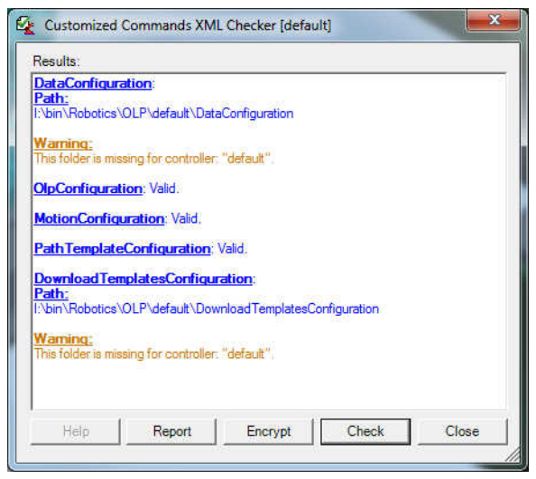
Po kliknutí na Check služba načíta XML v uvedenom poradí a prípadné chyby zobrazí v dialógu Result.
Kliknutie na Help otvorí súbor pomocníka RoboticsCustomizedUIManual.
Na ochranu vlastných XML súborov je možné použiť šifrovanie. Stlačte tlačidlo Encrypt a vyberte XML súbory, ktoré chcete zašifrovať. Zašifrované súbory sa vytvoria s príponou XMLC a môžete ich bezpečne posielať dodávateľom a subdodávateľom. Process Simulate / RobotExpert pracuje so súbormi XML aj XMLC transparentne.
Ak chcete zobraziť zoznam verzií radičov, ku ktorým sa zašifrované XML súbory vzťahujú, stlačte tlačidlo Report.
Aby boli organizácie chránené pred neobmedzeným používaním odcudzených vlastných XML súborov, je možné použiť element ExpirationDate a nastaviť jeho dátum. Po tomto čase už XML nie je platné a zobrazí sa chybová správa, napríklad:
<RobotController Name="Abb-Rapid" ExpirationDate="15/03/2015"
ExpirationMsg="The XML file has expired.">Editor OLP (OLP Editor) a prehliadač robotického programu (Robot Program Viewer) umožňujú zadávať OLP príkazy ako voľný text. Všetky robotické radiče – ABB, Fanuc, Kuka a ďalšie – podporujú automatický prevod príkazov zadaných ako voľný text na vlastné (custom) príkazy, ktoré existujú vo vlastnom XML.
Zachováva sa tak možnosť pridávať príkazy cez určený dialóg navrhnutý v UI vrstve vlastného XML, ale zároveň sa dá použiť voľný text – ručné zadávanie alebo kopírovanie a vkladanie – pri zachovaní väzby na vlastný dialóg, aby sa dal príkaz jednoducho ďalej upravovať.
Každý radič má vlastné štandardné OLP príkazy, ktoré sa dajú vytvoriť pomocou aplikácie Teach Pendant. Ak chcete vytvoriť nové OLP príkazy, zapíšete riadky do XML súborov.
XML súbory sa majú ukladať do: <PS installation>\eMPower\Robotics\Olp\<controller name>\OLPConfiguration\*.xml
<RobotController Name="Abb-Rapid">
<RoboticParams>
</RoboticParams>
<OlpCommands>
</OlpCommands>
<OlpDialogs>
</OlpDialogs>
</RobotController>Toto je koreň XML.
Všeobecná legenda početnosti:
| Zápis | Význam |
|---|---|
| 1 | Musí sa vyskytnúť práve raz |
| 1-* | Musí sa vyskytnúť aspoň raz |
| 0-* | Voliteľné, pri výskyte aspoň raz |
| 0-1 | Voliteľné, pri výskyte práve raz |
| @ | XML atribút |
| # | XML element |
Príklad: <RobotController Name="Abb-Rapid" Version="All">
Version="3.2.s4c, 5.07.01.irc5, 4.0.118.s4cplus"Param), ktoré používajú vlastné OLP alebo pohybové príkazy. Process Simulate / RobotExpert načíta túto sekciu zo všetkých relevantných XML súborov (podľa radiča a verzie) do jednej vyrovnávacej pamäte, ktorú používajú všetky vlastné príkazy. Preto musí byť názov každého robotického parametra jedinečný.<!-- Toto je komentár -->Tento element obsahuje všetky informácie o jednom parametri v OLP príkaze, ktorý sa objaví v dialógu OLP príkazu. Jeden parameter môže používať viacero OLP príkazov, aj z iných XML súborov.
string, int, double, TxObject.Desatinné čísla:
.).
<Param Name="Speed" ValueType="double" MaxVal="20.7" MinVal="10.7" Default="11.8"/>. alebo ,.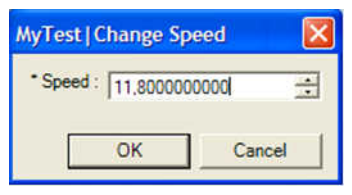
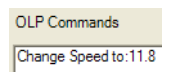
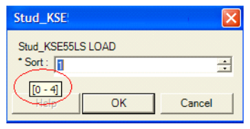
[@, 0-1] Default – predvolená hodnota ovládacieho prvku.
Jednoduchý reťazec:
<Param Name="Comment" ValueType="string"/>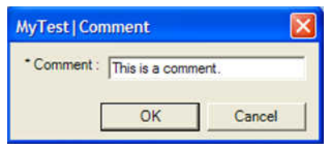
Viacriadkový reťazec: [@, 0-1] Multiline – viacriadkové pole. Hodnota musí byť true.
<Param Name="Comment" ValueType="string" Multiline="true"/>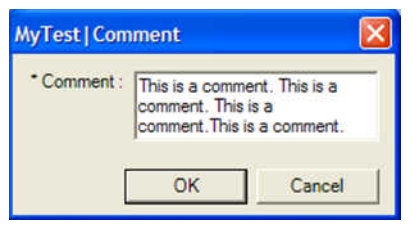
Reťazec s rozbaľovacím zoznamom (combo):
<Param Name="Gun Pose" ValueType="string">
<ComboDef>
<ElmDef/>
<ElmDef>OPEN</ElmDef>
<ElmDef>CLOSE</ElmDef>
<ElmDef>SEMI</ElmDef>
</ComboDef>
</Param>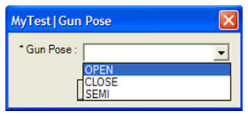
Pre prázdny riadok pridajte <ElmDef/>.
Nastavuje maximálny počet znakov, ktoré možno ručne zadať do textového poľa. Napríklad:
<Param Name="SeamName" ValueType="string" MaxLength="7"></Param>Dynamický combo reťazec: [@, 0-1] DynamicCombo – načíta sa z radiča za behu. Použiť možno ľubovoľný parameter zo súborov C:\ProgramData\Tecnomatix\Process Simulate\<PS Version>\Robotics\PathEditor\AvailableColumns\*.xml v príslušnej sekcii radiča, ktorý je označený ako „combobox“. Hodnota musí byť "true".
<Param Name="Interp" ValueType="string" DynamicCombo="true"/>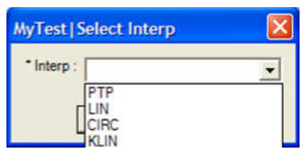
[@, 0-1] LinkTo – vloží názvy póz robota, zvarovacích klieští alebo chápadla do rozbaľovacieho zoznamu.
<Param Name="RobotPose" ValueType="string">
<ComboDef LinkTo="Robot.Poses"/>
</Param>
<Param Name="GunPose" ValueType="string">
<ComboDef LinkTo="ActiveGun.Poses"/>
</Param>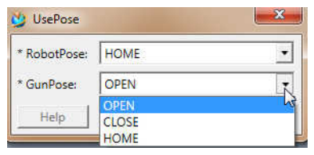
ActiveGun.Poses načíta pózy klieští, inak pózy chápadla.
Objekt môže byť iba: compound, part_instance, part_physical_appearance, part_prototype_assignment, compound_resource, resource_instance, resource_prototype_assignment a akýkoľvek fyzický objekt v rozsahu komponentu.
Bez filtra:
<Param Name="RobotOrGun" ValueType="TxObject"/>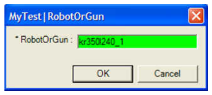
S konkrétnymi typmi výberu:
<Param Name="Location" ValueType="TxObject">
<PickTypes>
<PickType>TxRoboticViaLocationOperation</PickType>
<PickType>TxWeldLocationOperation</PickType>
</PickTypes>
</Param>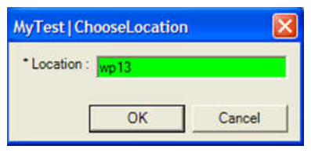
So zoznamom filtrovaných objektov: [@, 0-1] ShowList – zobrazí v ovládacom prvku zoznam filtrovaných objektov, hodnota musí byť "true".
<Param Name="Location" ValueType="TxObject">
<PickTypes ShowList="true">
<PickType>TxRoboticViaLocationOperation</PickType>
<PickType>TxWeldLocationOperation</PickType>
<PickType>TxGenericRoboticLocationOperation</PickType>
</PickTypes>
</Param>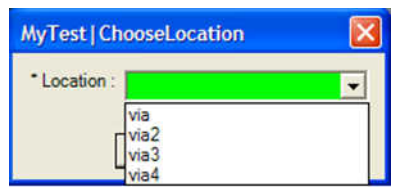
S konkrétnym typom validátora: [@, 0-1] TxValidatorType – jedna z hodnôt:
| Hodnota | Čo overuje |
|---|---|
| AnyLocatableObject | Akýkoľvek umiestniteľný objekt. Predvolený validátor ovládacích prvkov. |
| Component | Iba komponenty |
| Group | Iba skupiny |
| Geometry | Iba geometrie |
| Frame | Iba súradnicové systémy (frames) |
| Note | Iba poznámky |
| Device | Iba zariadenia |
| Robot | Iba roboty |
| Operation | Iba operácie |
| RoboticLocationOperation | Iba robotické lokačné operácie |
| WeldLocationOperation | Iba zvarové lokačné operácie (vrátane zvarových bodov, ktoré ešte neboli premietnuté) |
| PhysicalCollection | Iba skupiny lokácií a komponenty |
| LocationOrOrderedCompoundOperation | Iba lokačné operácie a usporiadané zložené operácie |
| Gripper | Iba chápadlá |
| LocationOperation | Iba lokačné operácie |
| Gun | Iba zvarovacie kliešte |
| MfgFeature | Iba Mfg Features |
| PhysicalOrLogicalCollection | Iba skupiny, komponenty a logické kolekcie |
| CollisionPairItem | Iba položky kolíznych dvojíc |
<Param Name="Location" ValueType="TxObject" TxValidatorType="Frame"/>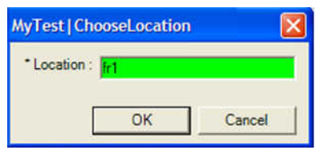
V dialógoch, ktoré si prispôsobujete, môžete používať signály s nasledujúcou syntaxou:
<Param Name="ToSignal" ValueType="TxObject">
<PickTypes ShowList="true">
<PickType>TxPlcToRobotSignal</PickType>
</PickTypes>
</Param>
<Param Name="FromSignal" ValueType="TxObject">
<PickTypes ShowList="true">
<PickType>TxPlcFromRobotSignal</PickType>
</PickTypes>
</Param>
<Param Name="AllSignal" ValueType="TxObject">
<PickTypes ShowList="true">
<PickType>TxPlcToRobotSignal</PickType>
<PickType>TxPlcFromRobotSignal</PickType>
</PickTypes>
</Param>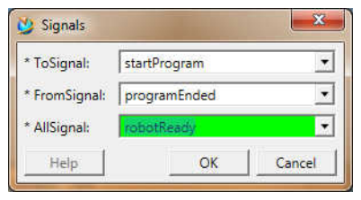
Kľúčovým slovom SignalType môžete prispôsobiť typy signálov, ktoré sa zobrazia v rozbaľovacom zozname DigitalOutputSignal. Príznak AddInfo umožňuje uviesť jeden alebo viac stĺpcov, ktorých hodnoty sa majú zobraziť. Príznak AddInfoSeparator umožňuje zmeniť oddeľovač z predvolenej dvojbodky.
DigitalOutputSignal môžete do rozbaľovacieho zoznamu pridať filter typu signálu – napríklad pre vstup alebo výstup pridať bool, byte, word atď. pomocou kľúčového slova PickTypes SignalType.SignalType je relevantný iba pre typy TxPlcFromRobotSignal alebo TxPlcToRobotSignal. Možné hodnoty sú osem typov signálov podporovaných v Process Simulate: bool, byte, int, dint, word, dword, real, lreal. Dva a viac typov možno kombinovať čiarkou:
<PickType SignalType="int,dint">TxPlcToRobotSignal</PickType>AddInfo.AddInfo je relevantný iba pre typy TxPlcFromRobotSignal alebo TxPlcToRobotSignal. Možné hodnoty sú atribúty signálu dostupné v Signal Viewer:
<PickType AddInfo="type,comment,IEC">TxPlcFromRobotSignal</PickType>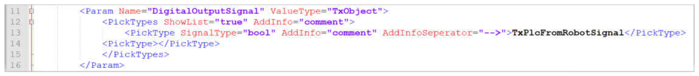
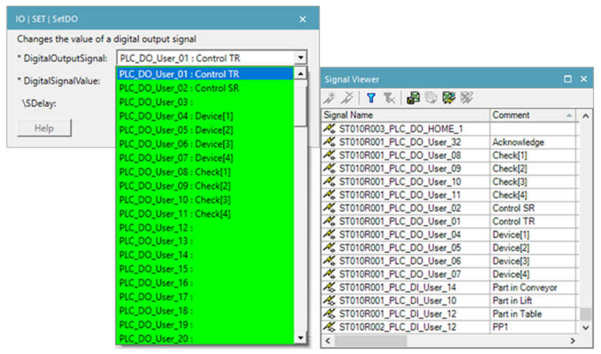
Oddeľovač možno zmeniť úpravou príznaku AddInfoSeperator. V príklade nižšie sa mení z dvojbodky na šípku:
<PickType SignalType="bool" AddInfo="comment" AddInfoSeperator="-->">
TxPlcFromRobotSignal</PickType>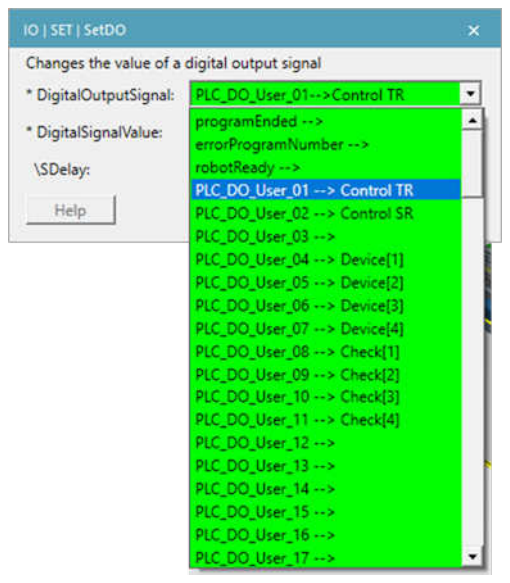
Ak majú parametre identické deklarácie, zapíšte ich do jednej sekcie Param a oddeľte čiarkou.
Namiesto štyroch samostatných blokov:
<Param Name="Pick_1" ValueType="TxObject">
<PickTypes ShowList="true">
<PickType>TxRoboticProgram</PickType>
</PickTypes>
</Param>
<!-- ... to isté pre Pick_2, Pick_3, Pick_4 ... -->zapíšte:
<Param Name="Pick_1, Pick_2, Pick_3, Pick_4" ValueType="TxObject">
<PickTypes ShowList="true">
<PickType>TxRoboticProgram</PickType>
</PickTypes>
</Param>Ak sa má tomuto automatickému rozdeleniu podľa čiarky zabrániť (názov parametra sám obsahuje čiarku), použite atribút SingleName:
<Param SingleName="true" Name="SDelay time (0,1-32s)" ValueType="double"></Param>Na priradenie konkrétnych hodnôt kĺbu použite:
MaxVal = "<Device>.<Joint Name>.Max"
MinVal = "<Device>.<Joint Name>.Min"
Default = "<Device>.<Joint Name>.Current"Príklad:
<Param Name="AnvilRotationVal" ValueType="double"
MaxVal="LowerRam_G2000.Rot.Max" MinVal="LowerRam_G2000.Rot.Min"
Default="LowerRam_G2000.Rot.Current"></Param>Hodnoty sú výhradne v stupňoch alebo milimetroch (podľa typu kĺbu).
Tento element obsahuje všetky OLP príkazy (elementy Command) použité vlastnými OLP príkazmi. Aplikácia načíta túto sekciu zo všetkých relevantných XML súborov (podľa radiča a verzie) do jednej vyrovnávacej pamäte. Názov každého OLP príkazu musí byť preto jedinečný.
Reprezentuje jeden vlastný OLP príkaz; obsahuje názov príkazu a názvy parametrov.
[@, 1] Name – názov vlastného OLP príkazu.
Obsahuje zoznam parametrov (elementy Param a Layers), ktoré sa vzťahujú na vlastný OLP príkaz.
Hodnotou tohto elementu je názov jedného parametra zo zoznamu RoboticParams. (Názov parametra môžete vybrať aj z ľubovoľného XML súboru toho istého radiča a verzie.)
Predvolene musí používateľ hodnotu parametra zadať (označené hviezdičkou); inak zostane tlačidlo OK neaktívne.
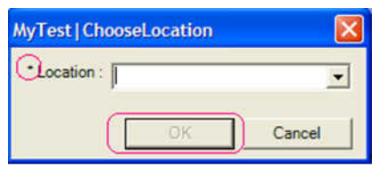
[@, 0-1] Optional – ak sa použije, hodnota musí byť "true".
<Param Optional="true">Location</Param>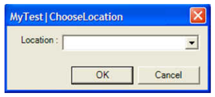
[@, 0-1] UseLocationParamVal – ak sa použije, hodnota musí byť true:
<Command Name="WaitTime">
<RoboticParamRef>
<Param UseLocationParamVal="true">SW_WAIT_TIME</Param>
</RoboticParamRef>
...Pri vytváraní nových OLP príkazov tak možno využiť informáciu, ktorá už existuje v robotickom parametri aktuálnej lokácie. Je to veľmi užitočné po importe MFG atribútov do robotických parametrov lokácií. Pozrite kapitolu o vzťahu medzi Mfg atribútmi a robotickými parametrami zvarových lokácií a operácií zvarových húseníc v dokumentácii Process Simulate / RobotExpert.
Tento element reprezentuje každý vlastný OLP príkaz v troch rôznych podobách (UI, simulácia, download).
UILayer sa má vypisovať iba ako jeden riadok.Reprezentuje jeden vlastný OLP príkaz v:
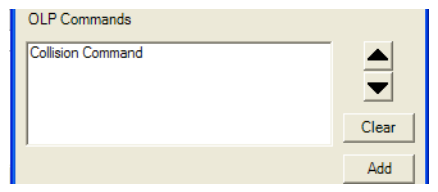
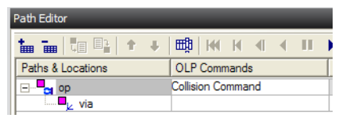
Reprezentuje jeden riadok.
Každý Item sa vypíše do riadka.
Typ „const“:
<Item Type="const">The Robot is:</Item> – vypíše hodnotu elementu ako konštantný reťazec.<Item Type="const" xml:space="preserve"></Item> – vypíše medzery.<Item Type="const" Conditional="true" CondParam="Robot">The Robot is:</Item>[@, 0-1] Conditional, CondParam: CondParam má obsahovať parameter s atribútom Optional. Pri Conditional="true" sa reťazec vypíše, iba ak parameter „Robot“ má hodnotu; pri Conditional="false" sa vypíše, iba ak hodnotu nemá.
Typ „parameter“:
<Item Type="parameter">Robot</Item> – vypíše hodnotu parametra „Robot“.<Item Type="parameter" Conditional="true" CondParam="Robot">Robot</Item> – vypíše sa iba ak má parameter hodnotu.<Item Type="parameter" Conditional="true" CondParam="Robot">Gun</Item> – tento tvar je tiež platný (hodnota Gun sa vypíše, iba ak má hodnotu parameter „Robot“) a v niektorých prípadoch je užitočný.Typ „dynamicParameter“:
<Item Type="dynamicParameter">Interp</Item>Za behu načíta hodnotu „Interp“ z radiča a vypíše ju. Hodnotou môže byť:
C:\ProgramData\Tecnomatix\Process Simulate\<PS Version>\Robotics\PathEditor\AvailableColumns\*.xml,Dynamic Parameters - OlpUtilDynamic Parameters - <Controller>Lib (nie je dostupné pre všetky radiče)Dynamic Parameters - <Controller> (nie je dostupné pre všetky radiče)Ak potrebujete zobraziť výsledok matematického výpočtu namiesto samotnej hodnoty parametra, použite typ expression:
<Item Type="expression"><![CDATA['IntNum' * 60]]></Item>Bežné použitie je v UILayer alebo SimulationLayer, keď potrebujete zobraziť iné (číselné) jednotky než v DownloadLayer.
Ak nastavíte atribút Context na download, dajú sa vykonávať aritmetické výpočty nad stiahnutými (download) hodnotami parametrov. Napríklad pri takto definovaných parametroch A a B:
<Param Name="ParameterA" ValueType="string" Default="Close">
<ComboDef>
<ElmDef DownloadRepresentation="1">Close</ElmDef>
<ElmDef DownloadRepresentation="2">Open</ElmDef>
<ElmDef DownloadRepresentation="3">Hold</ElmDef>
</ComboDef>
</Param>
<Param Name="ParameterB" ValueType="string" Default="Open">
<ComboDef>
<ElmDef DownloadRepresentation="1">Close</ElmDef>
<ElmDef DownloadRepresentation="2">Open</ElmDef>
<ElmDef DownloadRepresentation="3">Hold</ElmDef>
</ComboDef>
</Param>sa stiahnuté hodnoty vyhodnotia vo výraze:
<Item Type="expression" Context="download"><![CDATA[('ParametreA'+'ParametreB')]]></Item>Ak potrebujete použiť celočíselnú hodnotu parametra typu double, použite atribút ConvertToInt s hodnotou true:
<Item Type="parameter" ConvertToInt="true">FY</Item>
<Item Type="dynamicParameter" ConvertToInt="true">Speed</Item>Na zaokrúhlenie počtu desatinných miest parametra typu double použite atribút DigitsAfterPoint s kladnou číselnou hodnotou:
<Item Type="parameter" DigitsAfterPoint="3">FY</Item>
<Item Type="dynamicParameter" DigitsAfterPoint="3">Speed</Item>Napríklad 123.456 sa vypíše ako 123.46. Atribút sa dá použiť aj pre výrazy:
<Item Type="expression" DigitsAfterPoint="3"><![CDATA[('WeldPointX'/25.4)]]></Item>Niektoré radiče vyžadujú, aby hodnoty parametrov typu double mali rovnaký počet desatinných miest. Napríklad:
Param A = 5.1234
Param B = 5Pri DigitsAfterPoint="2" vznikne:
Param A = 5.12
Param B = 5Ak radič vyžaduje chýbajúce miesta (5.00), nastane chyba. Preto zápis:
<Item Type="parameter" DigitsAfterPoint="2" UseFixedDecimalDigits="true">A</Item>
<Item Type="parameter" DigitsAfterPoint="2" UseFixedDecimalDigits="true">B</Item>vráti:
Param A = 5.12
Param B = 5.00Ak potrebujete ten istý reťazcový combo parameter reprezentovať v každej vrstve inou hodnotou (napr. inú hodnotu v UI vrstve než v download vrstve), použite DownloadRepresentation namiesto dlhých konštrukcií switch/case.
Namiesto:
<RoboticParams>
<Param Name="A01_JobMode" ValueType="string" Default="Started">
<ComboDef>
<ElmDef>Started</ElmDef>
<ElmDef>Done</ElmDef>
...
</ComboDef>
</Param>
</RoboticParams>
...
<DownloadLayer>
<Line>
<Switch ParamName="A01_JobMode">
<Case Value="Started"><Item Type="const">1</Item></Case>
<Case Value="Done"><Item Type="const">2</Item></Case>
</Switch>
</Line>
</DownloadLayer>stačí napísať:
<RoboticParams>
<Param Name="A01_JobMode" ValueType="string" Default="Started">
<ComboDef>
<ElmDef DownloadRepresentation="1">Started</ElmDef>
<ElmDef DownloadRepresentation="2">Done</ElmDef>
...
</ComboDef>
</Param>
</RoboticParams>
...
<DownloadLayer>
<Line>
<Item Type="parameter" Context="download">A01_JobMode</Item>
</Line>
</DownloadLayer>Reprezentuje programový prepínač vnútri riadka. Naraz sa dá použiť iba jedna úroveň (nie vnorené) s viacerými prípadmi (case).
Reprezentuje programový prípad. Každý Case má obsahovať [#, 0-*] Item. Pre predvolenú hodnotu použite [#, 0-1] Default.
Príklad 1:
<Line>
<Switch ParamName="Location">
<Case Value="via1">
<Item Type="const">The Location is: via1</Item>
</Case>
<Case Value="via2">
<Item Type="const">The Location is:</Item>
<Item Type="parameter">Location</Item>
</Case>
<Case>
<Default>
<Item Type="const">The Location is: Default</Item>
</Default>
</Case>
</Switch>
</Line>Príklad 2 (prepínanie podľa dynamického parametra):
<Switch ParamName="Attr:RRS_ZONE_NAME" DynamicParameter="true">
<Case Value="fine"><Item Type="const">G60</Item></Case>
<Case Value="nodecel"><Item Type="const">G64</Item></Case>
</Switch>Príklad 3 (prázdna hodnota nevypíše nič):
<Switch ParamName="Load Data">
<Case Value=""/>
<Case>
<Default>
<Item Type="const">\PartLoad:=</Item>
<Item Type="parameter">Load Data</Item>
</Default>
</Case>
</Switch>Reprezentuje programový prepínač mimo riadka. Aj tu platí iba jedna úroveň (bez vnárania).
<Switch ParamName="Location">
<Case Value="via1">
<Line>
<Item Type="const">The location is:</Item>
<Item Type="parameter">Location</Item>
</Line>
<Line>
<Item Type="const">The Speed is:</Item>
<Item Type="parameter">Speed</Item>
</Line>
</Case>
<Case>
<Default>
<Line><Item Type="const">Default value</Item></Line>
</Default>
</Case>
</Switch>Na zápis zložitých podmienok (s viac ako jedným parametrom), na použitie signálov v podmienkach a pre ďalšie prípady použite formát If-ElseIf-Else.
Keďže niektoré znaky nie sú v XML platné, odporúča sa podmienku zabaliť do sekcie CDATA: <![CDATA[<podmienka>]]>. Každý parameter aj dynamický parameter treba obaliť apostrofmi, napr. 'Speed1'.
Vyhodnocovanie výrazov podporuje:
And, and, &)Or, or, |)Xor, xor)Not, not, !)==<> (!=)<, <=, >, >=+, -, *, /TRUE / FALSENULL – iba pre dynamické parametrePríklad:
<If>
<![CDATA[('Speed1'<10) && ('Speed2'<=10) && ('Zone'!=NULL) && ('Fclo'==FALSE)]]>
<Line>
<!--ToDo - add your items-->
</Line>
</If>
<ElseIf>
<![CDATA[('Speed1'>10) && ('Speed2'>10) && ('Zone'==fine)]]>
<Line>
<!--ToDo - add your items-->
</Line>
</ElseIf>
<Else>
<Line>
<!--ToDo - add your items-->
</Line>
</Else>Podmienku možno umiestniť aj dovnútra riadka:
<Line>
<If>
<![CDATA[('Speed1'<10) && ('Speed2'<=10)]]>
<!--ToDo - add your items-->
</If>
<ElseIf>
<![CDATA[('Speed1'>10) && ('Speed2'>10)]]>
<!--ToDo - add your items-->
</ElseIf>
<Else>
<!--ToDo - add your items-->
</Else>
</Line>IF (napríklad so switchom) nie je povolené. Viacero vetiev ElseIf povolené je.Rovnaké možnosti ako UILayer, podporuje viacero riadkov.
Definícia: v simulačnej vrstve vlastného OLP príkazu definujete, ako sa príkaz bude simulovať. Keď radič počas simulácie narazí na vlastný OLP príkaz, nahradí ho jeho simulačnou vrstvou a interpretuje túto vrstvu. Do simulačnej vrstvy môžete napísať akýkoľvek elementárny príkaz (jeden na sekciu <Line>...</Line>), ktorému radič rozumie:
# SendSignal sig1, # WaitTime 2, # Blank PaintFanEntity, …),IF var1 = 3 THEN, volanie makier, volanie procedúry robotického modulu, …).Zoznam syntaxe podporovanej simuláciou konkrétneho radiča nájdete v (skrátenej) používateľskej príručke daného radiča. V simulačnej vrstve je úplne prípustné miešať príkazy „default controllera“ s príkazmi v natívnej syntaxi radiča.
Príklad: OLP príkaz, ktorý otvára alebo zatvára striekaciu pištoľ. Berie tieto parametre:
<GunNum>, celé číslo),<Status>, logická hodnota: „true“ = zapnuté, „false“ = vypnuté).V štúdii dodržte tieto pravidlá pomenovania komponentov vejára pištole: názov robota, potom „gun“, potom číslo. Napríklad pre robota „r1“: r1_gun1, r1_gun2.
UI/Download syntax príkazu môže byť: MyPaintGunCommand <GunNum>, <Status>;
V simulačnej vrstve sa zobrazí alebo skryje správny komponent vejára pištole:
IF <Status> THEN <-- natívna syntax radiča
# Display <Robot>gun<GunNum> <-- príkaz default controllera
ELSE <-- natívna syntax radiča
# Blank <Robot>gun<GunNum> <-- príkaz default controllera
ENDIF <-- natívna syntax radičaTo isté v XML:
<SimulationLayer>
<Line>
<Item Type="const">IF</Item>
<Item Type="parameter">Status</Item>
<Item Type="const">THEN</Item>
</Line>
<Line>
<Item Type="const"># Display ${Robot}gun</Item>
<Item Type="parameter">GunNum</Item>
</Line>
<Line>
<Item Type="const">ELSE</Item>
</Line>
<Line>
<Item Type="const"># Blank ${Robot}gun</Item>
<Item Type="parameter">GunNum</Item>
</Line>
<Line>
<Item Type="const">ENDIF</Item>
</Line>
</SimulationLayer>Rovnaké možnosti ako UILayer – podporuje viacero riadkov.
Táto voliteľná sekcia slúži na popis alternatívnych download vrstiev pre prípad, keď sa OLP príkaz musí stiahnuť do viac ako jedného miesta programového súboru. Podporuje rovnakú syntax ako bežná sekcia DownloadLayer.
Táto možnosť je momentálne podporovaná iba pre Kuka-Vkrc s týmito typmi:
<AdditionalDownloadLayer Type="Adv"> – KRL syntax pred pohybom<AdditionalDownloadLayer Type="Main"> – KRL syntax po pohybe<AdditionalDownloadLayer Type="Trig"> – KRL syntax v sekcii SPS_TRIGDownloadLayer používa na popis syntaxe OLP príkazu v pozícii hlavičky foldu.Obsahuje zoznam dialógov; každý z nich umožňuje vytvoriť jeden alebo viac OLP príkazov.
<OlpDialogs>
<Dialog Title="MyTest|Customized|ChooseLocation"
Description="Please select a location" Icon="gripperOp.ico">
<OlpCommandRef>
<OlpCommand>ChooseLocation</OlpCommand>
</OlpCommandRef>
</Dialog>
</OlpDialogs>[@, 1] Title – názov dialógu v Teach Pendante. Každý znak | znamená nový podadresár (podmenu).
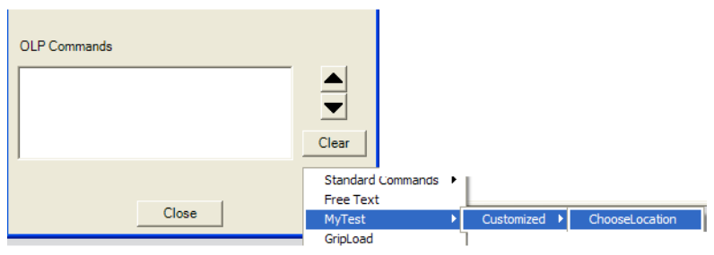
[@, 0-1] Description – krátky popis pre používateľa vnútri dialógu.
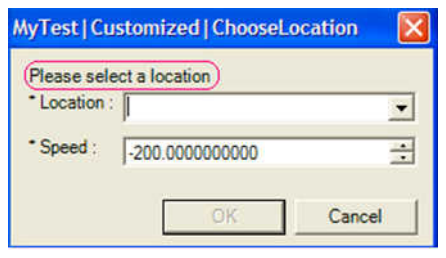
[@, 0-1] Icon – ikona dialógu.
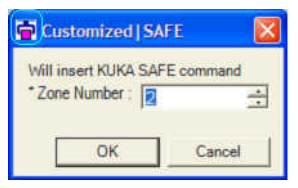
Používateľ môže vytvoriť priečinok CustomizedIcons pod \Robotics\Olp\ a uložiť tam svoje ikony. Tento priečinok slúži všetkým radičom pre OLP aj pohybové vlastné dialógy. Icon je voliteľný atribút a jeho hodnotou je relatívna cesta od priečinka CustomizedIcons (aby sa nemusela písať celá cesta).
V príklade sa gripperOp.ico nachádza v priečinku CustomizedIcons. Vnútri tohto priečinka si môžete ikony ľubovoľne organizovať do vnorených podpriečinkov, napríklad:
\Robotics\Olp\CustomizedIcons\weld\myIcon.ico → <Icon="weld\myIcon.ico">
Jedným dialógom je možné vytvoriť aj viac OLP príkazov, pokiaľ sa žiadny parameter neopakuje viac ako raz. Keď potom používateľ v Teach Pendante klikne na jeden z týchto OLP príkazov, otvorí sa spoločný dialóg a umožní upraviť oba.
Používateľ môže definovať explicitnú vrstvu, ktorá reprezentuje hodnotu dynamického parametra. Hodnota atribútu Representation môže byť UI, simulation alebo download.
Item:
<Item Type="dynamicParameter" Representation="UI">Tool Nr</Item>If:
<If Representation="download">
<![CDATA[(('Ipo Fr' == #BASE) && ('Tool Nr' != 90))]]>
<Item Type="const">G80</Item>
</If>Switch:
<Switch ParamName="Tool Nr" DynamicParameter="true" Representation="download">
<Case Value="90"><Item Type="const">G90</Item></Case>
<Case Value="80"><Item Type="const">G80</Item></Case>
</Switch>| Entita | Význam |
|---|---|
< | Znak menšie (<) – začína značku elementu (prvý znak počiatočnej alebo koncovej značky). |
& | Znak ampersand (&) – začína zápis entity. |
> | Znak väčšie (>) – ukončuje počiatočnú alebo koncovú značku. |
" | Dvojitá úvodzovka (") – keď ju treba vložiť do reťazca, ktorý je už v dvojitých úvodzovkách. |
' | Apostrof (') – keď ho treba vložiť do reťazca, ktorý je už v jednoduchých úvodzovkách. |
" a ' skúste najprv jednoduchý zápis.Použitie v <Item>:
<Item Type="const">5<=5 & 6=>6 'CAR' "ROBOT"</Item>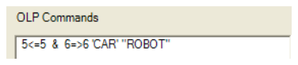
A v <ElmDef>:
<ComboDef>
<ElmDef>0<=10</ElmDef>
<ElmDef>10<=20</ElmDef>
<ElmDef>30<=40</ElmDef>
<ElmDef>40<50</ElmDef>
</ComboDef>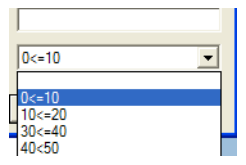
<Command Name="Anfrage" UploadLocationType="Seam Start">Tento atribút slúži na vytváranie operácií zvarových húseníc (seam) pri uploade na základe OLP príkazov (namiesto na základe vlastných lokácií). Systém vytvorí húsenicu od lokácie za OLP príkazom „Seam Start“ až po lokáciu za OLP príkazom „Seam End“.
Podrobnejšie:
Príklad. Keď program obsahuje:
LIN P1
LIN P2
OLP_COMMAND_DEFINED_AS_SEAM_START
LIN P3
LIN P4
OLP_COMMAND_DEFINED_AS_SEAM_END
LIN P5
LIN P6Upload vytvorí nasledujúcu štruktúru:
CONTINUOUS OP
- P1 (via)
- P2 (via)
• OLP_COMMAND_DEFINED_AS_SEAM_START
• Seam 1
• P3 (seam)
• P4 (seam)
■ OLP_COMMAND_DEFINED_AS_SEAM_END
• P5 (seam)
- P6 (via)<Command Name="Anfrage" UploadLocationType="Seam Start" MfgType="ArcContinuousMfg">Atribút MfgType slúži na vytváranie špecializovaných podtried výrobných prvkov WeldPoint a ContinuousMfg. Možné hodnoty:
Pre prispôsobenie WELD lokácie – Process Simulate on eMServer (PS eMS):
NutWeldPointStudWeldPointWeldPointPre prispôsobenie SEAM lokácie (Start/Middle/End) – Process Simulate on eMServer (PS eMS):
ArcContinuousMfg, GlueContinuousMfg, PaintContinuousMfg, SealContinuousMfg, LaserWeldContinuousMfg, LaserBrazeContinuousMfg, LaserCutContinuousMfg, WaterJetContinuousMfg, RollerHemmingContinuousMfg, MachiningContinuousMfg, CoatingContinuousMfg, PlyLayupContinuousMfgContinuousMfgProcess Simulate on Teamcenter (PS TC):
ArcWeld, Glue, Paint, Seal, LaserWeld, LaserBraze, LaserCut, WaterJetCut, RollerHemming, Machining, Coating, PlyLayupKeď chcete stiahnuť tento riadok:
<Item Type="const">('Speed' >50) && ('Acceleration' <=30)</Item>museli by ste napísať:
<Item Type="const">('Speed' >50) &&
( 'Acceleration' <=30)</Item>Pomocou CDATA stačí napísať:
<Item Type="const"><![CDATA[('Speed' >50) && ('Acceleration' <=30)]]></Item>Ak potrebujete viacero podobných OLP príkazov, môžete zmenšiť veľkosť XML definovaním šablónového OLP príkazu s argumentmi. Sekcia dialógu sa potom na tieto šablónové príkazy odvolá a argumentom dá konkrétnu hodnotu.
V nasledujúcom príklade šablónový príkaz SET_SEGMENT používa argument SegmentNumber; v sekcii dialógov sa ten istý šablónový príkaz použije s rôznymi hodnotami argumentu:
<RobotController Name="Kuka-Krc">
<RoboticParams>
<Param Name="ProgNr1" ValueType="int" MaxVal="16" MinVal="1"/>
</RoboticParams>
<TemplateOlpCommands>
<TemplateCommand Name="SET_SEGMENT">
<RoboticParamRef>
<Param>ProgNr1</Param>
</RoboticParamRef>
<CommandName>
<Item Type="const">SET_SEGMENT_</Item>
<Item Type="const" Arg="SegmentNumber"/>
</CommandName>
<Layers>
<UILayer>
<Line>
<Item Type="const">SET SEGMENT(</Item>
<Item Type="const" Arg="SegmentNumber"></Item>
<Item Type="const">);</Item>
</Line>
</UILayer>
<SimulationLayer></SimulationLayer>
<DownloadLayer>
<Line>
<Item Type="const">SET SEGMENT(</Item>
<Item Type="const" Arg="SegmentNumber"></Item>
<Item Type="const">(</Item>
<Item Type="parameter">ProgNr1</Item>
<Item Type="const">);</Item>
</Line>
</DownloadLayer>
</Layers>
</TemplateCommand>
</TemplateOlpCommands>
<OlpDialogs>
<Dialog Title="SET_SEGMENT|SET_SEGMENT1">
<OlpCommandRef><OlpCommand SegmentNumber="1">SET_SEGMENT</OlpCommand></OlpCommandRef>
</Dialog>
<Dialog Title="SET_SEGMENT|SET_SEGMENT2">
<OlpCommandRef><OlpCommand SegmentNumber="2">SET_SEGMENT</OlpCommand></OlpCommandRef>
</Dialog>
<Dialog Title="SET_SEGMENT|SET_SEGMENT3">
<OlpCommandRef><OlpCommand SegmentNumber="3">SET_SEGMENT</OlpCommand></OlpCommandRef>
</Dialog>
</OlpDialogs>
</RobotController>Pomocou Aliases môžete definovať opakovane použiteľné bloky XML inštrukcií, na ktoré sa dá odkazovať v príslušných vrstvách príkazov.
Dramaticky to zmenšuje veľkosť XML odstránením opakujúcej sa syntaxe. Aliasy zároveň uľahčujú údržbu XML, pretože každá oprava sa robí na jednom mieste.
<RoboticParams>
...
</RoboticParams>
<Aliases>
<Alias Name="BitOrder">
<Switch ParamName="ordre1">
<Case Value="0"></Case>
<Case Value="1"><Item Type="const">\O1</Item></Case>
</Switch>
<Switch ParamName="ordre2">
<Case Value="0"></Case>
<Case Value="1"><Item Type="const">\O2</Item></Case>
</Switch>
<!-- ... ordre3 až ordre6 rovnako ... -->
</Alias>
</Aliases>
<OlpCommands>
<Command Name="PLC_Release">
<RoboticParamRef>...</RoboticParamRef>
<Layers>
<UILayer>
<Line><Alias>BitOrder</Alias></Line>
</UILayer>
<DownloadLayer>
<Line>
<Item Type="const">ORDER</Item>
<Alias>BitOrder</Alias>
<Item Type="const">;</Item>
</Line>
</DownloadLayer>
</Layers>
</Command>
</OlpCommands><Param Name="OperationTask" ValueType="string" Default="Weld 10Am">
<ComboDef>
<ElmDef Picture="guns_tools\.appzc5299229.jpg">Weld 10Am</ElmDef>
<ElmDef Picture="guns_tools\.appzc5299231.jpg">Weld 20Am</ElmDef>
<ElmDef Picture="Laser\.appguna.jpg">Laser high temp</ElmDef>
<ElmDef Picture="Laser\appgr_5276159_030430.jpg">Laser middle temp</ElmDef>
<ElmDef Picture="Laser\appzc5299228.jpg">Laser low temp</ElmDef>
<ElmDef Picture="fixtures\.appvr5299295.jpg">Fixtures - 295</ElmDef>
<ElmDef Picture="fixtures\.appbg5266425_a.jpg">Fixtures - 425</ElmDef>
<ElmDef Picture="grippers\.appgr5236767.jpg">Gripper X</ElmDef>
<ElmDef Picture="grippers\.appgr5299315_a.jpg">Gripper XX</ElmDef>
</ComboDef>
</Param>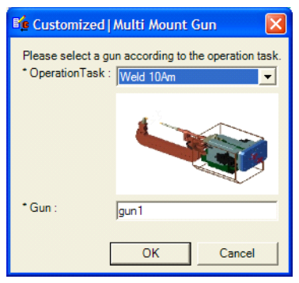
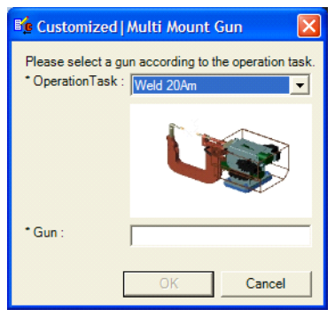
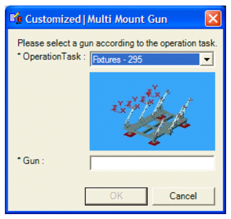
Cesta k obrázku je relatívna k ..\Robotics\Olp\CustomizedPictures. Picture je voliteľný atribút. Vnútri tohto priečinka si môžete obrázky organizovať do vnorených podpriečinkov, napríklad:
\Robotics\Olp\CustomizedPictures\Laser\appzc5299228.jpg → <ElmDef Picture="Laser\appzc5299228.jpg">Weld 10Am</ElmDef>
Motivácia:
Jednoduché riešenie: služba automaticky vygeneruje tlačidlo Help v ľavom dolnom rohu dialógu. Keď sa chce používateľ o danej funkcii dozvedieť viac, jednoducho klikne na toto tlačidlo a súbor sa otvorí online. Mechanizmus podporuje všetky existujúce technológie vrátane dokumentov, zvuku, videa a ďalších médií.
Syntax:
<Dialog Title="MyTest" Help="MyTest.html">Cesta k pomocníkovi je relatívna k ..\Robotics\Olp\CustomizedHelp. Ak chcete spustiť URL, pridajte do priečinka zástupcu (shortcut), do XML zadajte jeho názov + .url.
Predvolene sa XML súbory čítajú z inštalačného priečinka: \Robotics\Olp\<controller name>\OlpConfiguration\*.xml, \Robotics\Olp\<controller name>\MotionConfiguration\*.xml atď.
Syntax: atribút CustomizedPath v súbore rrs.xml:
<Controller Name="Kuka-Krc">
<InstalledVersions>
<Version Name="krc5.3_r01" CustomizedPath="\\jlhzsomebody\Kuka-Krc\Supplier_1">
<ModuleName>C:\rrs_bin\rcs_krc1\krc5.3_r01\bin\rcskrc1_tune.exe</ModuleName>
</Version>
</InstalledVersions>
</Controller>V tomto príklade robot s radičom Kuka-Krc a verziou krc5.3_r01 číta svoje XML súbory odtiaľto:
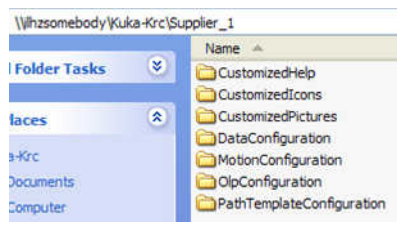
Ak chcete zobraziť všetky vrstvy jedného alebo viacerých vlastných OLP príkazov, otvorte Teach Pendant, kliknite pravým tlačidlom na príslušné OLP príkazy a vyberte Show Layers.
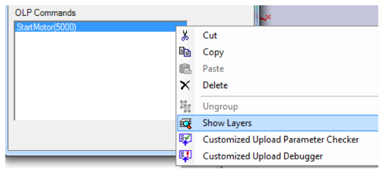
Show Layers: otvorí sa nový dialóg so simulačnou a download vrstvou každého vybraného vlastného OLP príkazu.
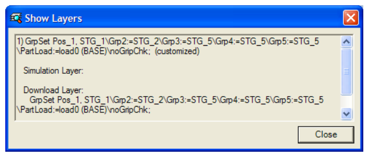
Upload Checker: otvorí sa dialóg s aktuálnymi a načítanými (uploadovanými) hodnotami každého robotického a dynamického parametra vybraného vlastného OLP príkazu.
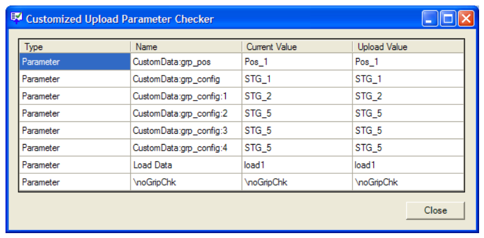
Upload Debugger: keď sa vlastný OLP príkaz pri uploade nepodarí rozpoznať, dá sa príčina zlyhania odladiť. Postup:
Obsah dialógu Upload Debugger možno upraviť a znova spustiť tlačidlom Re-Upload.
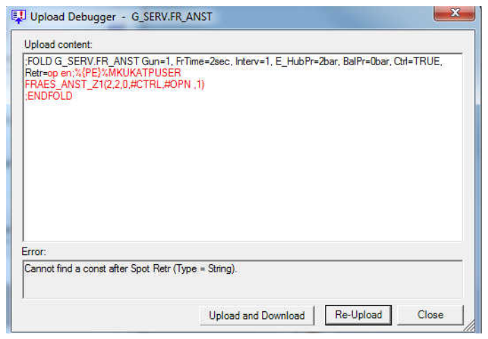
Tlačidlo Upload and Download: ladiaci nástroj, ktorý obsah v Upload Debuggeri načíta a znova stiahne a potom porovná pôvodný obsah s výsledkom uploadu a downloadu (zobrazeným v spodnej časti dialógu). Každý nesúlad sa zvýrazní červenou.
Príklad – používateľ definuje takýto vlastný OLP príkaz:
<Param Name="GlueTechVersion" ValueType="string">
<ComboDef>
<ElmDef>1.2.1</ElmDef>
<ElmDef>2.3.2</ElmDef>
</ComboDef>
</Param>
...
<DownloadLayer>
<Line>
<Item Type="const">;FOLD</Item>
<Item Type="parameter">GlueTechVersion</Item>
<Item Type="const">Check PrePressure =</Item>
<If>
<![CDATA['GlueTechVersion'==1.2.1]]>
<Item Type="const">Yes</Item>
</If>
<Else>
<Item Type="const">No</Item>
</Else>
</Line>
<Line>
<Item Type="const">;ENDFOLD</Item>
</Line>
</DownloadLayer>Download potom dá buď ;FOLD 1.2.1 Check PrePressure = Yes + ;ENDFOLD, alebo ;FOLD 2.3.2 Check PrePressure = No + ;ENDFOLD.
Ak program používateľa chybne obsahuje riadok, ktorý nezodpovedá ani jednej z týchto možností, upload prebehne úspešne, ale obsah OLP bude odlišný od obsahu programu. Otestovať sa to dá práve tlačidlom Upload and Download: po vložení chybného riadka a kliknutí na tlačidlo uvidíte, že výsledok uploadu a downloadu sa líši od pôvodného riadka programu (2.3.2 sa zmení na 1.2.1).
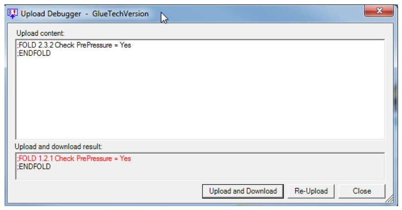
Syntax: atribút Id.
Účel:
bez straty väzby medzi existujúcimi vlastnými príkazmi v databáze a ich editačným dialógom.
Ak boli príkazy vytvorené týmto XML kódom:
<Dialog Title="Customized|Supplier1|Robot Job1">
<OlpCommandRef><OlpCommand>XXX</OlpCommand></OlpCommandRef>
</Dialog>a teraz chcete zmeniť názov dialógu, pridajte atribút Id so starým názvom a potom zmeňte Title na nový:
<Dialog Id="Customized|Supplier1|Robot Job1"
Title="Customized|Supplier1|Robot|Job1">
<OlpCommandRef><OlpCommand>XXX</OlpCommand></OlpCommandRef>
</Dialog>Ak už atribút Id existuje a chcete názov dialógu zmeniť znova, meňte iba atribút Title:
<Dialog Id="Customized|Supplier1|Robot|Job1"
Title="Customized|Supplier1|Robot|Job2">
<OlpCommandRef><OlpCommand>XXX</OlpCommand></OlpCommandRef>
</Dialog>Id je údaj uložený v databáze, ktorý spája OLP príkazy s dialógom používaným na ich úpravu. Ak Id nie je definované, ako predvolené Id sa použije Title.
a. Použitie viacerých OLP príkazov s rovnakými názvami v zdieľanom dialógu:
<Dialog Title="Glue">
<OlpCommandRef>
<OlpCommand>OLP_1</OlpCommand>
<OlpCommand>OLP_2</OlpCommand>
<OlpCommand>OLP_3</OlpCommand>
<OlpCommand>OLP_1</OlpCommand>
</OlpCommandRef>
</Dialog>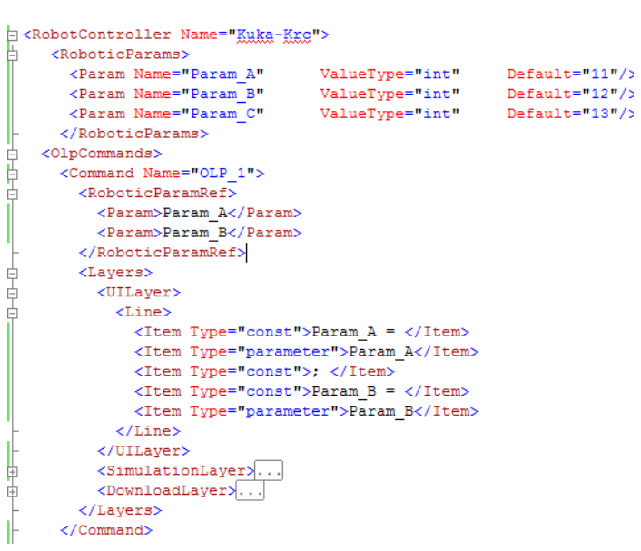
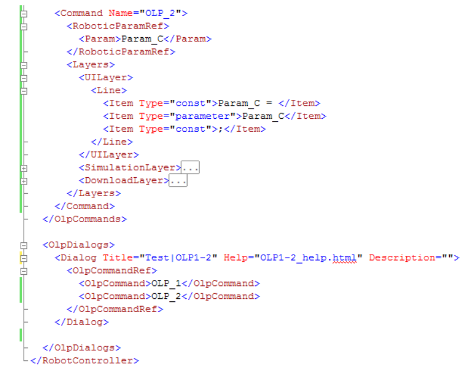
b. Oddelenie príkazov (Ungroup) v Teach Pendante:
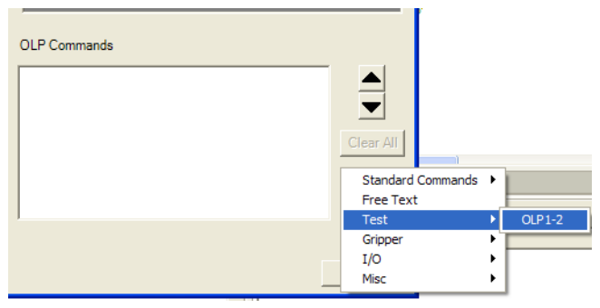
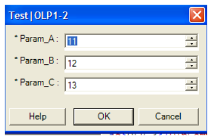
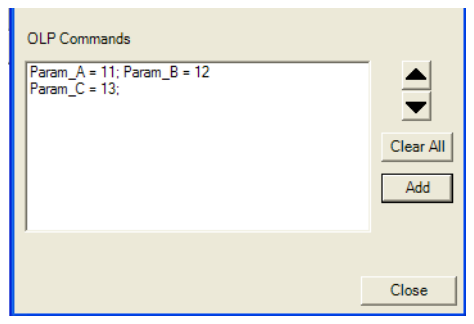
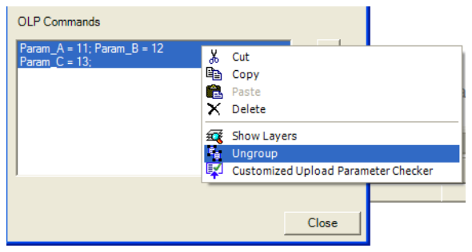
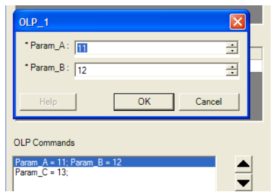
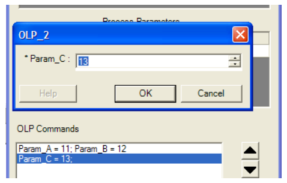
Ak chcete do Teach Pendantu pridať oddeľovače, použite znak - na konci názvu fiktívneho dialógu:
<Dialog Title="PL2Glue|-">
<OlpCommandRef/>
</Dialog>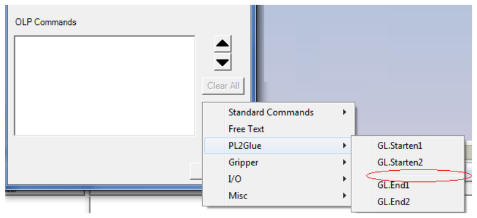
Sú prípady, keď sa niektoré voliteľné vlastné parametre majú deaktivovať v závislosti od hodnôt vybraných v iných vlastných parametroch. Na to slúži voliteľná sekcia Disabled pri parametri. V nej definujete podmienky (na základe vybraných hodnôt iných parametrov), za ktorých sa parameter v dialógu deaktivuje. Deaktivované parametre sa pri kliknutí na OK neberú do úvahy.
<Command Name="PLC_Release">
<RoboticParamRef>
<Param Optional="true" Name="order1">
<Disabled>
<!--Deaktivuj order1 v prípade, že order3 je deaktivovaný-->
<![CDATA[('order3' == NULL)]]>
</Disabled>
</Param>
<Param>SDelay | Sync</Param>
<Param>order2</Param>
<Param Optional="true" Name="order3">
<Disabled>
<!--Deaktivuj order3, ak 'SDelay | Sync' má hodnotu SDelay
a 'order4' je väčší ako 5-->
<![CDATA[('SDelay | Sync'==SDelay) && ('order4' >5)]]>
</Disabled>
</Param>
<Param>order4</Param>
<Param>order5</Param>
<Param>order6</Param>
</RoboticParamRef>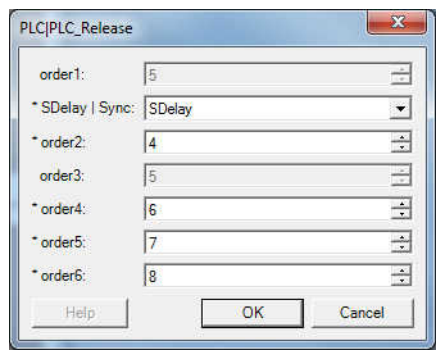
Pomocou atribútov Hide a DynamicValue sa dialóg dynamicky prispôsobí vašej logike:
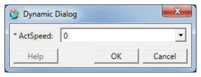
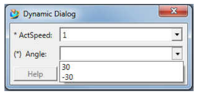
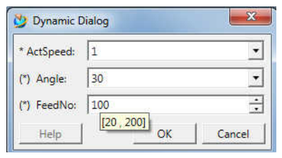
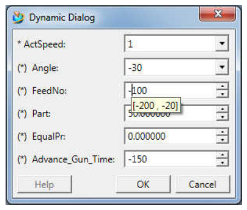
Kód v XML:
<RobotController Name="Kuka-Krc-Volvo">
<RoboticParams>
<Param Name="ActSpeed" ValueType="string" Default="0">
<ComboDef>
<ElmDef>0</ElmDef>
<ElmDef>1</ElmDef>
<ElmDef>2</ElmDef>
</ComboDef>
</Param>
<Param Name="Angle" ValueType="string">
<Hide><![CDATA[('ActSpeed' == 0)]]></Hide>
<ComboDef>
<DynamicValue Value="30"><![CDATA[('ActSpeed' == 1)]]></DynamicValue>
<DynamicValue Value="-30"><![CDATA[('ActSpeed' == 1)]]></DynamicValue>
<DynamicValue Value="60"><![CDATA[('ActSpeed' == 2)]]></DynamicValue>
<DynamicValue Value="-60"><![CDATA[('ActSpeed' == 2)]]></DynamicValue>
</ComboDef>
</Param>
<Param Name="FeedNo" ValueType="int" MaxVal="4" MinVal="0">
<Hide><![CDATA[('Angle' == "")]]></Hide>
<DynamicValue MaxVal="200" MinVal="20" Default="100">
<![CDATA[('Angle'> 0)]]>
</DynamicValue>
<DynamicValue MaxVal="-20" MinVal="-200" Default="-100">
<![CDATA[('Angle' <0)]]>
</DynamicValue>
</Param>
<Param Name="Part" ValueType="double" MaxVal="100.00" MinVal="0.00">
<Hide><![CDATA[(('FeedNo'=="))||('Angle'> 0)]]></Hide>
</Param>
<Param Name="EqualPr" ValueType="double" MaxVal="9.75" MinVal="-9.75">
<Hide><![CDATA[(('FeedNo'=="))||('Angle'> 0)]]></Hide>
</Param>
<Param Name="Advance_Gun_Time" ValueType="int" MaxVal="0" MinVal="-300">
<Hide><![CDATA[(('FeedNo'=="))||('Angle'> 0)]]></Hide>
</Param>
</RoboticParams>
<Command Name="Dynamic">
<RoboticParamRef>
<Param>ActSpeed</Param>
<Param>Angle</Param>
<Param>FeedNo</Param>
<Param>Part</Param>
<Param>EqualPr</Param>
<Param>Advance_Gun_Time</Param>
</RoboticParamRef>
</Command>Obmedzenia:
Disabled, musí byť prítomný v dialógu.Vlastné pohybové príkazy sú kombinácie bežných pohybových príkazov s procesnými príkazmi.
Pre každú kombináciu typu lokácie a typu procesu (stĺpec pod sekciou názvu radiča) sa dá použiť iný dialóg na úpravu príslušného robotického parametra.
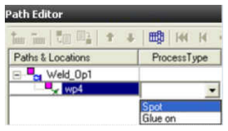
Výberom hodnoty používateľ prispôsobí lokáciu.
Do Path Editora (pod sekciu názvu radiča) sa dá pridať nový stĺpec Customized Motion, ktorý umožňuje pohybový príkaz prispôsobiť, upraviť a zobraziť v odporúčanom formáte. Pre lokácie, ktoré prispôsobené neboli, zostanú bunky v tomto stĺpci prázdne.
Keď používateľ klikne na bunku v tomto stĺpci, Path Editor zavolá službu, ktorá nájde konfiguračný súbor správneho radiča a otvorí dialóg (podľa locationType + processType), aby sa nastavili robotické parametre deklarované v konfiguračnom súbore. Dialóg sa otvorí s aktuálnymi hodnotami parametrov.
Po nastavení hodnôt a kliknutí na OK služba aktualizuje všetky robotické parametre na lokácii novými hodnotami a vráti do Path Editora správny formát tohto prispôsobenia (podľa UI vrstvy v XML), ktorý sa zobrazí v príslušnej bunke.
Ak robotické parametre na lokácii neexistujú, služba ich vytvorí so správnym typom a nastaví im novú hodnotu.
Služba sa dokáže za behu pripojiť k radiču, aby načítala zoznam objektov – výhradne pre rozbaľovacie zoznamy (napríklad signály alebo nástroje).
Každá kombinácia typu lokácie, procesu a pohybu môže vytvoriť inú download vrstvu.
XML súbory sa majú ukladať do: <PS installation>\eMPower\Robotics\Olp\<controller name>\MotionConfiguration\*.xml
<RobotController Name="Kuka-Krc">
<RoboticParams>
</RoboticParams>
<Location Type="VIA">
<Process Type="Spot Off">
<!--Vynúť nasledujúcim robotickým parametrom novú hodnotu-->
<Force>
</Force>
<Dialog Title="moshe|Kuka-Vkrc - VIA Spot Customization"
Description="Please customize the location">
<RoboticParamRef>
</RoboticParamRef>
</Dialog>
<UILayer>
</UILayer>
<SimulationLayer>
</SimulationLayer>
<Motion Type="1">
<DownloadLayer>
</DownloadLayer>
</Motion>
</Process>
</Location>
</RobotController>[@, 1] Type – typ lokácie: VIA, WELD, Single Seam, Seam Start, Seam End, Seam Middle.
[@, 1] Type – typ lokácie: Pick, Place.
[@, 1] Type – typ procesu.
Keď používateľ vyberie pre lokáciu typ procesu, aplikácia vynúti nové hodnoty konkrétnych robotických parametrov.
[#, 0-*] Param
int, double, string, TxObject.<Param Name="RRS_ZONE_NAME" Type="string" NewValue="Zfine"/>Syntax je rovnaká ako pri OLP príkazoch. Ide o parametre, ktoré sa zobrazia v dialógu po kliknutí na stĺpec Customized Motion v Path Editore.
Tento element reprezentuje jeden vlastný pohybový príkaz v Path Editore:
V simulačnej vrstve vlastného pohybového príkazu definujete, ako sa bude príkaz simulovať. Podobne ako pri vlastných OLP príkazoch môžete do simulačnej vrstvy napísať akýkoľvek elementárny príkaz (jeden na sekciu <Line>...</Line>), ktorému radič rozumie, a miešať príkazy „default controllera“ s natívnou syntaxou radiča.
Hlavný rozdiel: treba definovať, kedy sa má každý príkaz interpretovať vzhľadom na pohyb do lokácie – pred pohybom, súbežne s ním, alebo po jeho dokončení. Aby sa príkazy vykonali skutočne v lokácii a nie počas predvýpočtu pohybu (niekoľko lokácií vopred), môžete si vynútiť úplný príchod do lokácie (zóna fine).
Na tieto účely boli zavedené ďalšie príkazy „default controllera“. Rozumejú im simulácie všetkých radičov, hoci nie sú dostupné z Teach Pendantu ani editora príkazov:
# StartMove a # WaitReached: spustí pohyb a počká na jeho dokončenie, až potom interpretuje ďalší príkaz.Ak sa # StartMove ani # Move v simulačnej vrstve výslovne neuvedie, všetky simulácie radičov predpokladajú, že príkazy simulačnej vrstvy sa interpretujú po pohybe do lokácie. Inými slovami, neuvedenie týchto príkazov je totožné s uvedením # Move ako prvého príkazu.
Pri simulácii štandardnej zvarovej lokácie, ktorá neobsahuje explicitné OLP príkazy # Weld a # GunToState, ich simulácia počas behu implicitne doplní (hneď po pohybe a pred akýmkoľvek OLP príkazom nastaveným na lokácii), takže sa vždy odsimuluje zatvorenie a opätovné otvorenie klieští. Naopak pri vlastnej zvarovej lokácii sa pohyb zvarovacích klieští implicitne nesimuluje – niektorí používatelia totiž chcú zváranie simulovať posielaním signálov inteligentným zariadeniam, nie pohybom klieští. Ak teda chcete pri vlastnej zvarovej lokácii simulovať pohyb klieští, musíte do simulačnej vrstvy vložiť príkaz # Weld.
Príklad. Vlastná zvarová lokácia, kde pohyb klieští simuluje inteligentné zariadenie. Kliešte sú pneumaticko-servo kliešte, ktoré – ako každé pneumatické kliešte – nie sú definované ako externá os robota. Na rozdiel od pneumatických klieští s tromi stavmi (CLOSE, SEMIOPEN, OPEN) však majú veľa stavov, každý určený hodnotou otvorenia (1 mm, 2 mm, … 100 mm, …).
Najprv namodelujte inteligentné zariadenie klieští tak, aby prijímalo od robota cez PLC tento signál:
[Device] TargetPose (celočíselný signál v mm) ← PLC ← TargetPoseGun<GunNum> [Robot]: cieľová hodnota otvorenia klieštía aby robotu cez PLC posielalo tento signál:
[Device] ActualPose (celočíselný signál v mm) → PLC → ActualPoseGun<GunNum> [Robot]: skutočná hodnota otvorenia klieštíVlastný zvarový pohyb obsahuje dva ďalšie parametre: GunNumber a GunPose (v mm) – hodnota opätovného otvorenia klieští.
V simulačnej vrstve sa vykonajú tieto kroky:
TargetPoseGun<GunNum> s hodnotou nulaActualPoseGun bude nulaGunPose – odoslanie signálu TargetPoseGun<GunNum> s hodnotou <GunPose><SimulationLayer>
<Line><Item Type="const"># Move</Item></Line>
<Line><Item Type="const"># ForceFullArrival</Item></Line>
<Line>
<Item Type="const"># SendSignal TargetPoseGun</Item>
<Item Type="parameter">GunNum</Item>
<Item Type="const">0</Item>
</Line>
<Line>
<Item Type="const"># Wait Signal ActualPoseGun</Item>
<Item Type="parameter">GunNum</Item>
<Item Type="const">0</Item>
</Line>
<Line>
<Item Type="const"># WaitTime</Item>
<Item Type="dynamicParameter">Weld Time</Item>
</Line>
<Line>
<Item Type="const"># SendSignal TargetPoseGun</Item>
<Item Type="parameter">GunNum</Item>
<Item Type="const"> </Item>
<Item Type="parameter">GunPose</Item>
</Line>
<Line>
<Item Type="const"># WaitSignal TargetPoseGun</Item>
<Item Type="parameter">GunNum</Item>
<Item Type="const"> </Item>
<Item Type="parameter">GunPose</Item>
</Line>
</SimulationLayer>[@, 1] Type – typ pohybu.
Download vrstva každého pohybového príkazu musí obsahovať odkaz na jeden z dynamických parametrov LocName alebo XDatName (a pri kruhovom pohybe aj na ViaLoc Name alebo Via XDatName).
<Dialog Title="Move_JobReq">
<RoboticParamRef>
<Param>Job</Param>
<Param Dynamic="true">Gun Position</Param>
</RoboticParamRef>
<UiAdditionalDynamicParameters>
<AdditionalDynamicParam Name="Tool Data">
<Item Type="const">t</Item>
<Item Type="dynamicParameter" FormatNumber="3">Gun Position</Item>
<Item Type="const">_onsert</Item>
</AdditionalDynamicParam>
</UiAdditionalDynamicParameters>
</Dialog>Ak chcete nastaviť ďalší dynamický parameter výrazom z iných parametrov, použite typ položky expression:
<Dialog Title="A15_Speed" Description="Please define relevant parameters:">
<RoboticParamRef>
<Param>A15_Speed m/min</Param>
</RoboticParamRef>
<UiAdditionalDynamicParameters>
<AdditionalDynamicParam Name="Speed">
<Item Type="expression"><![CDATA[('A15_Speed m/min'/60)]]></Item>
</AdditionalDynamicParam>
</UiAdditionalDynamicParameters>
</Dialog>V uvedenom príklade po otvorení dialógu, nastavení „A15_Speed m/min“ a kliknutí na OK sa dynamický parameter Speed nastaví na hodnotu „A15_Speed m/min“ delenú 60.
Ak chcete použiť hodnotu parametra z úrovne operácie, pridajte atribút Level:
<Item Type="parameter" Level="operation">RRS_ZONE_NAME</Item>
<Switch ParamName="RRS_ZONE_NAME" Level="operation">Parameter na úrovni operácie nie je možné nastaviť z používateľského rozhrania.
Ak chcete nastaviť hodnoty vlastného pohybu naraz pre viacero lokácií, použite príkaz Set Locations Properties. Nastavte typ procesu pre všetky lokácie, potom vyberte riadok Customized motion a kliknutím otvorte dialóg.
Ak chcete automaticky vynútiť hodnotu dynamického parametra po zmene typu procesu, použite syntax Dynamic="true":
<Force>
<!--Vynútenie bežných parametrov-->
<Param Name="TypID" Type="int" NewValue="11"/>
<Param Name="Part" Type="double" NewValue="0.0"/>
<Param Name="Leave" Type="string" NewValue="CTRL"/>
<!--Vynútenie dynamických parametrov-->
<Param Name="Position Number" Dynamic="true" NewValue="3"/>
<Param Name="Gun State" Dynamic="true" NewValue="Open"/>
<Param Name="Weld Time" Dynamic="true" NewValue="5.5"/>
</Force>Parametre možno vynútiť nielen podľa typu procesu, ale aj podľa typu pohybu:
Na vytvorenie nových hodnôt dynamických parametrov počas uploadu:
<UploadAdditionalDynamicParameters>
<AdditionalDynamicParam Name="Loc Name">
<Item Type="const">Reload</Item>
<Item Type="parameter">A21_StudNo</Item>
<Item Type="const">_</Item>
<Item Type="parameter">A21_ReloadPos</Item>
</AdditionalDynamicParam>
</UploadAdditionalDynamicParameters>AdditionalDynamicParam.const, parameter, dynamicParameter.Na vytvorenie nových robotických parametrov s hodnotami počas uploadu. Funguje rovnako ako UploadAdditionalDynamicParameters, ale pre bežné (nie dynamické) parametre. Názvy a typy parametrov (int, double, string) musia byť ako obvykle definované v sekcii RoboticParams.
<UploadAdditionalParameters>
<AdditionalParam Name="Type Number">
<Item Type="const">5</Item>
</AdditionalParam>
<AdditionalParam Name="Type">
<Item Type="const">A</Item>
</AdditionalParam>
</UploadAdditionalParameters><Location Type="Seam Start"/>
<Process Type="A20_Stud_Reload" MfgType="ArcContinuousMfg"/>Atribút MfgType slúži na vytváranie špecializovaných podtried výrobných prvkov WeldPoint a ContinuousMfg (hodnoty pozri v kapitole 3.42).
Ak chcete zobraziť všetky vrstvy jedného vlastného pohybového príkazu, pridajte do zobrazenia Path Editora stĺpec Customized Debug a kliknite na príslušnú bunku.
Show Layers: otvorí dialóg so simulačnou a download vrstvou vybraného vlastného pohybového príkazu.
Upload Checker: otvorí dialóg s aktuálnymi a načítanými hodnotami každého robotického a dynamického parametra vybraného príkazu.
Upload Debugger: ak sa vlastný pohybový príkaz pri uploade nepodarí rozpoznať, môžete proces odladiť:
Tlačidlo Upload and Download funguje rovnako ako pri OLP príkazoch (kapitola 3.49): načíta a znovu stiahne obsah a porovná ho s pôvodným; nesúlad zvýrazní červenou. Príklad s parametrom GlueTechVersion:
<Param Name="GlueTechVersion" ValueType="string">
<ComboDef>
<ElmDef>1.2.1</ElmDef>
<ElmDef>2.3.2</ElmDef>
</ComboDef>
</Param>
<DownloadLayer>
<Line>
<Item Type="const">;FOLD</Item>
<Item Type="parameter">GlueTechVersion</Item>
<Item Type="const">Check PrePressure =</Item>
<If><![CDATA['GlueTechVersion'==1.2.1]]><Item Type="const">Yes</Item></If>
<Else><Item Type="const">No</Item></Else>
<Item Type="dynamicParameter">Loc Name</Item>
</Line>
<Line><Item Type="const">;ENDFOLD</Item></Line>
</DownloadLayer>Syntax: použite Dynamic="true".
<Dialog>
<RoboticParamRef>
<Param Dynamic="true">Gun State</Param>
<Param Dynamic="true">Servo Value</Param>
<Param Optional="true" Dynamic="true">Speed</Param>
<Param Optional="true" Dynamic="true">Weld Time</Param>
<Param Optional="true" Dynamic="true">Gun CloseTime</Param>
</RoboticParamRef>
</Dialog>Ak majú všetky robotické parametre v RoboticParamRef konkrétneho dialógu predvolené hodnoty, po výbere hodnoty Process Type zobrazia UILayer, SimulationLayer aj DownloadLayer svoju reprezentáciu s použitím predvolených hodnôt. Po downloade a uploade bude mať nová lokácia na sebe skutočný parameter s predvolenými hodnotami.
Aby sa vlastné príkazy dali načítať späť (upload), dodržte tieto pravidlá:
Po každej z týchto premenných – string, dynamic, object – urobte buď A, alebo B:
A. Umiestnite za premennú konštantu (hodnota parametra siaha od aktuálnej pozície parsera po najbližšiu nájdenú konštantu).
Nesprávne:
<Item Type="parameter">Robot</Item>
<Item Type="parameter">Gun</Item>Správne:
<Item Type="parameter">Robot</Item>
<Item Type="const">;</Item>
<Item Type="parameter">Gun</Item>B. Premenná musí byť poslednou položkou v riadku (hodnota parametra siaha od pozície parsera do konca riadka).
Nesprávne:
<Line>
<Item Type="const">The Robot is</Item>
<Item Type="parameter">Robot</Item>
<Item Type="parameter">RRS_Tool</Item>
</Line>Správne:
<Line>
<Item Type="const">The Robot is</Item>
<Item Type="parameter">Robot</Item>
</Line>Ak je typ Int a maximálna aj minimálna hranica majú rovnaký počet číslic (X číslic), parser prevezme nasledujúcich X číslic.
<RoboticParams>
<Param Name="ordre1" ValueType="int" MaxVal="100" MinVal="999"/>
<Param Name="order2" ValueType="int" MaxVal="10" MinVal="99"/>
<Param Name="order3" ValueType="int" MaxVal="0" MinVal="9"/>
...
<DownloadLayer>
<Line>
<Item Type="parameter">order1</Item>
<Item Type="parameter">order2</Item>
<Item Type="parameter">order3</Item>
...Download vrstva: 123456 → Upload: order1=123, order2=45, order3=6. V tomto prípade sa dajú celočíselné parametre použiť bez koncových konštánt.
Po premenných typu int a double platí: ak sa za ich hodnotu pridajú ďalšie znaky, prvý z nich nesmie byť číselný (parser používa na rozpoznanie konca číselnej hodnoty regulárny výraz).
Int Speed = 88
TxObject Robot (name) = 9robotNesprávne:
<Item Type="parameter">Speed</Item>
<Item Type="parameter">Robot</Item>Download: 889robot
Vlastný pohybový alebo OLP príkaz môže mať voliteľné parametre. Predpokladá sa pritom, že v žiadnom robotickom jazyku neexistujú „voliteľné“ volané príkazy, napríklad CALL XYZ (par1, par2, opt1, opt2) nemožno nikdy reprezentovať ako CALL XYZ (par1, par2, opt2) – kompilátor robota by hlásil chýbajúci parameter. Rieši sa to buď ako CALL XYZ (par1, par2, , opt2), alebo CALL XYZ (par1, par2, EMPTY, opt2), kde EMPTY je kľúčové slovo. Aby systém takéto príkazy s chýbajúcimi parametrami rozpoznal, musíte ich rovnako oddeliť – konštantou alebo kľúčovým slovom.
MOVE .. ENDMOVE pri Comau).Syntax: atribút UploadRegex.
Ak za dynamickým parametrom nenasleduje konštanta, pridajte atribút UploadRegex, ktorý sa definuje ako konkrétna hodnota dynamického parametra.
<Item Type="dynamicParameter" UploadRegex="\w+">LPDatShortName</Item>Ak za reťazcovým parametrom nenasleduje konštanta, pridajte atribút UploadRegex:
<Item Type="parameter" UploadRegex="\w+">ShortName</Item>Vo všeobecnosti by mal mať každý parameter, ktorý nie je int ani double, hneď za sebou v XML konštantu.
Upload teraz podporuje reťazcové parametre na konci konštrukcie switch/case, ak za celým blokom switch nasleduje položka typu const. (Táto nasledujúca konštanta môže byť umiestnená aj v nasledujúcom bloku switch – pozri príklad.)
<Switch ParamName="LPDatShortName" DynamicParameter="true">
<Case Value="">
<Item Type="const">no LPDatShortName[</Item>
</Case>
<Case>
<Default>
<Item Type="const">LPDatShortName:</Item>
<Item Type="dynamicParameter">LPDatShortName</Item>
</Default>
</Case>
</Switch>
<Switch ParamName="Base Name" DynamicParameter="true">
<Case Value="">
<Item Type="const">Base[</Item>
<Item Type="dynamicParameter">Base Nr</Item>
<Item Type="const">]</Item>
</Case>
<Case>
<Default>
<Item Type="const">Base[</Item>
<Item Type="dynamicParameter">Base Nr</Item>
<Item Type="const">]:</Item>
<Item Type="dynamicParameter">Base Name</Item>
</Default>
</Case>
</Switch>
<Item Type="const" Conditional="false" CondParam="WeldFi">No WeldFi</Item>
<Item Type="const" Conditional="true" CondParam="WeldFi">There is WeldFi:</Item>
<Item Type="parameter" Conditional="true" CondParam="WeldFi">WeldFi</Item><Item Type="optionalSpaces" xml:space="preserve"> </Item>Pri výpise tejto položky sa vypíše presný počet medzier. Pri uploade sa však namiesto toho akceptuje 0 až N medzier. Dá sa to využiť obojsmerne:
<Item Type="optionalSpaces" xml:space="preserve"></Item>. Ak skutočný program medzery nemá, upload je aj tak možný.Všetky radiče podporujú upload vlastných OLP a pohybových príkazov s viacerými riadkami (viacerými foldmi v prípade Kuka-Krc) v download vrstve.
Už nie je nutné zapisovať všetky optionalSpaces – služba im „rozumie“ a implementuje ich sama tak, že konštantu rozdelí podľa medzery ako predvoleného oddeľovača.
Napíšete iba:
<Item Type="const">; %{PE} %MKUKATPUSER</Item>Parser tomu rozumie ako:
<Item Type="const">;</Item>
<Item Type="optionalSpaces" xml:space="preserve"> </Item>
<Item Type="const">%{PE}</Item>
<Item Type="optionalSpaces" xml:space="preserve"> </Item>
<Item Type="const">%MKUKATPUSER</Item>
<Item Type="optionalSpaces" xml:space="preserve"> </Item>Voliteľné medzery možno uviesť aj medzi dvoma zlepenými znakmi:
<Item Type="const" Separator=".">; %.{.PE.} %.MKUKATPUSER</Item>Parser tomu rozumie ako sekvencii konštánt ;, %, {, PE, }, %, MKUKATPUSER preložených voliteľnými medzerami.
Ak nechcete, aby sa medzery automaticky považovali za voliteľné, napíšte:
<Item Type="const" SpaceSeparator="false" Separator=".">; %.{.PE.} %.MKUKATPUSER</Item>Parser tomu potom rozumie ako ;%, {, PE, }%, MKUKATPUSER preloženým voliteľnými medzerami.
Atribút Separator už netreba písať ručne – parser rozdelí konštantu na viac častí a pridá voliteľné medzery pred a za každý nealfanumerický znak: ", !, @, $, #, %, ., ,, =, :, -, +, {, }, (, ), ;.
Napíšete iba:
<Item Type="const">;%{PE}%MKUKATPUSER</Item>Parser tomu rozumie ako sekvencii samostatných konštánt preložených voliteľnými medzerami. Výsledok pri downloade je ;%{PE}%MKUKATPUSER – a načítať (upload) sa dá aj zápis s medzerami.
Nasledujúci príklad je zo sveta KUKA pri použití XML pre vlastné pohyby.
Program KUKA sa skladá z dvoch súborov:
Dáta v súbore .DAT a inštrukcie v súbore .SRC sú navzájom prepojené. V príklade je dátový typ Xlo4 definovaný v .DAT a použitý v inštrukciách .SRC.
.DAT
====
DECL E6POS Xlo4 ={X 1086.01,Y -936,Z 2125.74,A 180,B 36.222,C 0,S 6,T 26}
.SRC
====
;FOLD LIN lo4 CONT Llo4 RETR CLO Gun=1 Tool[13] Base[1]:Rear_floor_carrier_stn2 ;
%{PE}%R5.4.33,%MKUKATPSPOT,%CRETR,%VLIN,%P 1:LIN, 2:lo4, 3:C_DIS, 5:3, 7:Llo4,
9:#CLO, 11:1, 13:#FIRST
$BWDSTART = FALSE
LDAT_ACT= LLlo4
FDAT_ACT= Flo4
BAS(#CP_PARAMS,LLlo4.VEL)
S_ACT.GUN=1
S_ACT.PAIR=#FIRST
S_ACT.RETR=#CLO
S_READY=FALSE
TRIGGER WHEN DISTANCE=1 DELAY=0.0 DO USERSPOT(#RETR,S_ACT) PRIO=-1
LIN Xlo4 C_DIS
WAIT FOR S_READY
;ENDFOLDV MotionConfiguration XML sa doteraz dal prispôsobiť iba súbor SRC – dá sa definovať download vrstva, ktorá vytvorí blok ;FOLD → ;ENDFOLD. Názvy a hodnoty dátových typov však automaticky generuje download radiča (z názvu lokácie).
Ak chcete prispôsobiť konvenciu pomenovania týchto dátových typov, použite konštantné časti, robotické parametre a dynamické parametre. Navyše si môžete prispôsobiť download vrstvu každého dátového typu v súbore .DAT. Napríklad hodnota dátového typu TM1:
DECL TQM_TQDAT_T TM1= {T11 200, T12 200, T13 200, T14 200, T15 200, T16 200,
T21 200, T22 200, T23 200, T24 200, T25 200, T26 200, K1 280, K2 280, K3 280,
K4 280, K5 280, K6 280, O1 20, O2 20, ID 1, OVM 0, TMF 1.0}Používatelia si navyše môžu vytvárať vlastné dátové typy.
Každý radič, ktorý túto funkcionalitu podporuje, vytvorí počas inštalácie radiča priečinok DataConfiguration pod priečinkom radiča.
Do tohto priečinka môžete uložiť jeden alebo viac XML súborov, ktoré sa naparsujú (do cache) pri prvom použití radičom – podľa názvu radiča (a atribútu verzie, ak existuje).
V nasledujúcom príklade používateľ definoval názov (<Name>) a hodnotu (<DownloadLayer>) pre dva dátové typy (DAT_PTP, TQM_TQDAT_T):
<RobotController Name="Kuka-Krc" Version="krc5.3_r01">
<RoboticParams>
<Param Name="PL_ACC" ValueType="double" MaxVal="100.5" MinVal="0"/>
<Param Name="T11" ValueType="int" MaxVal="100" MinVal="50"/>
</RoboticParams>
<DataDef>
<Data Type="DAT_PTP">
<Name>
<Item Type="const">DAT_PTP</Item>
<Item Type="dynamicParameter">Loc Id</Item>
</Name>
<DownloadLayer>
<Line>
<Item Type="const">DECL DAT_PTP</Item>
<Item Type="dataName">DAT_PTP</Item>
<Item Type="const">={PL_ACC</Item>
<Item Type="parameter">PL_ACC</Item>
<Item Type="const">}</Item>
</Line>
</DownloadLayer>
</Data>
<Data Type="TQM_TQDAT_T">
<Name>
<Item Type="const">TM</Item>
<Item Type="dynamicParameter">Loc Id</Item>
</Name>
<DownloadLayer>
<Line>
<Item Type="const">DECL TQM_TQDAT_T</Item>
<Item Type="dataName">TQM_TQDAT_T</Item>
<Item Type="const">={T11</Item>
<Item Type="parameter">T11</Item>
<Item Type="const">}</Item>
</Line>
</DownloadLayer>
</Data>
</DataDef>
</RobotController>V tomto príklade sa názov dátového typu nachádza v jeho hodnote (použitím Item Type="dataName").
<Item Type="dataName">XXX</Item>.DataTypeRef, ktorá odkazuje na názvy prepojených dátových typov z DataConfiguration (voliteľné).<RobotController Name="Krc">
<RoboticParams>
...
</RoboticParams>
<OlpCommands>
<Command Name="MountGun">
<RoboticParamRef>
<Param>OperationTask</Param>
<Param>Gun</Param>
</RoboticParamRef>
<DataTypeRef>
<Data>TQM_TQDAT_T</Data>
<Data>DAT_PTP</Data>
</DataTypeRef>
<DataDef>
<!--Prepis názvu DAT_PTP-->
<Data Type="DAT_PTP">
<Name>
<Item Type="const">DAT_PTP</Item>
<Item Type="const">_</Item>
<Item Type="dynamicParameter">Loc Id</Item>
<Item Type="const">_</Item>
<Item Type="parameter">PL_ACC</Item>
</Name>
</Data>
</DataDef>
...
</RobotController>Platí rovnaká logika ako pri OLP:
<Item Type="dataName">XXX</Item>.DataTypeRef (voliteľné).<RobotController Name="Krc">
<RoboticParams>
...
</RoboticParams>
<Location Type="WELD">
<Force>
...
</Force>
<Process Type="Spot Off">
<DataTypeRef>
<Data>TQM_TQDAT_T</Data>
<Data>DAT_PTP</Data>
</DataTypeRef>
<DataDef>
<!--Prepis názvu DAT_PTP-->
<Data Type="DAT_PTP">
<Name>
<Item Type="const">DAT_PTP</Item>
<Item Type="const">_</Item>
<Item Type="dynamicParameter">Loc Id</Item>
<Item Type="const">_</Item>
<Item Type="parameter">PL_ACC</Item>
</Name>
</Data>
</DataDef>
<Dialog>
...
</Dialog>
...
</RobotController>Služba uploadu načíta hodnotu a názov dátového typu a potom sa z neho pokúsi vyextrahovať robotické a dynamické parametre (iba pri OLP a pohybe, nie pri uploade dataDef), aby mohla použiť prepísané názvy dát.
Ak sa názov dát nezhoduje s XML, služba uploadu ho preskočí. Aby bol podporovaný, použite koncovú konštantu, napríklad:
DECL MYDATATYPE <dataName> ={<Definition>}
CONST MYDATATYPE <dataName> := [<Definition>]RoboticParams a Aliases definované v DataConfiguration XML sú spoločné a zdieľané medzi OLP konfiguráciou a Motion konfiguráciou. Používateľ ich tak môže definovať na jednom mieste (DataConfiguration) a odkazovať sa na ne z OLP aj pohybových XML súborov.
Často je potrebné nakonfigurovať parametre lokácií (nástroj, rýchlosť, zóna atď.), ktoré definujú dráhu pre konkrétny proces. Okrem toho sa do dráhy pridávajú nábehové a odbehové (approach a depart) via lokácie s rovnakými parametrami. Každá akcia môže do vybranej dráhy pridať lokácie, zmeniť orientáciu lokácií, robotické parametre a OLP príkazy. Napríklad pri lepení nastavuje používateľ začiatok a koniec lepenia a rýchlosť robota – parametre špecifické pre proces, ktoré sa majú použiť na každú lepiacu dráhu.
Process Simulate / RobotExpert umožňuje definovať akcie v XML šablóne a aplikovať ich na viacero operácií naraz. Môžete nastaviť parametre a OLP príkazy pre operácie aj lokácie, pridať nábehové a odbehové via lokácie a nastaviť ich súradnice. V XML šablóne môžete definovať mnoho akcií a aplikovať ich jediným kliknutím – ušetríte tak opakovanú ručnú konfiguráciu, zvýšite produktivitu a znížite chybovosť.
Robotické šablóny sa ukladajú ako XML súbory v určených priečinkoch. Keďže každý radič má vlastné OLP príkazy (štandardné, špecifické a vlastné) a pohybové parametre (bežné, komplexné a vlastné), každý radič potrebuje vlastný priečinok PathTemplateConfiguration. Priečinok sa vytvorí počas inštalácie radiča a nachádza sa v …\eMPower\Robotics\Olp\<Controller name>\PathTemplateConfiguration\. Berú sa do úvahy všetky XML súbory v tomto priečinku bez ohľadu na ich názvy.
Tlačidlo Set: umožňuje nastaviť hodnoty parametrov pre pohyb a OLP cez vygenerovaný dialóg. Používateľ môže opätovne upraviť aj staré hodnoty (z posledného nastavenia). Vygenerovaný dialóg (s rovnakým vzhľadom ako vlastné OLP a pohybové dialógy) sa otvorí, aby sa nastavili všetky robotické parametre bez hodnôt a všetky vlastné OLP príkazy, ktoré majú aspoň jeden parameter bez predvolenej hodnoty.
Príklad jednoduchých akcií:
RRS_MOTION_TYPE na 2OpenPaintGunSetPaintBrush 3RRS_MOTION_TYPE na 2ClosePaintGunAkcie sa dajú aplikovať na vybrané operácie.
<RobotController Name="Abb-Rapid" Version="4.0.91.s4cplus, 5.07.01.irc5">rrs.xml aplikáciou Robot Properties. Ak atribút nie je definovaný, predvolená hodnota je All.Príklad jedného uzla <Action>:
<Action Name="SetAllLocations" LocRange="All"
LocationTypes="Via,Weld" ProcessTypes="Polishing,Glue-on" MotionTypes="1,2"
Description="set all location which process = Polishing: \n the speed[20] \n the zone[z50]">
...
//Todo action
...
</Action>Každý uzol <Action> obsahuje tieto atribúty:
|, ide o podmenu; ak končí znakom -, ide o oddeľovač.
<Action Name="Paint|Correct TCP"> ... </Action>
<Action Name="Paint|-"></Action>
<Action Name="Paint | CleanAll"> ... </Action>Filtruje lokácie podľa ich podpory vlastného pohybu. Možné hodnoty: Via, Weld, Seam Start, Seam End, Seam Middle, Pick, Place.
<Action Name="AddLocAction" LocationTypes="Pick,Place">
<Color Value="RED"/>
</Action>Definuje lokácie, na ktorých sa má akcia vykonať. Možné hodnoty: All (predvolená), First, Last, n1, Last - n1, "n1-n2", "n1,n2,n3", Operation. Hodnota Operation nefunguje so žiadnymi inými filtrami – použite ju iba pre OLP príkazy, farbu a robotický parameter na úrovni vybranej operácie.
Dostupná je aj syntax "<od> - <po> <: krok – voliteľný>":
"4-8:2" – od 4. po 8. lokáciu, každá druhá"4-Last:2" – od 4. po poslednú, každá druhá"4-(Last-5):2" – od 4. po piatu od konca, každá druhá"(Last-4)-(Last-1)"Definuje operácie húseníc (pod vybranou spojitou zloženou operáciou), na ktorých sa má akcia vykonať. Možné hodnoty: All (vrátane všetkých via a seam lokácií; predvolená), First, Last, n1, Last - n1, "n1-n2", "n1,n2,n3". Podporovaná je aj syntax s krokom, rovnako ako v 7.6.
Tento element popisuje novú hodnotu jedného robotického parametra:
<Action Name="SetAllLocations" LocRange="All">
<Param RemoveAll="true"/>
<Param Name="RRS_MOTION_TYPE" Value="2"/>
<Param Name="Speed Data"/>
<Param Name="Wobj Data" Dynamic="true" Value="wobj0"/>
<Param Name="Zone Data" Dynamic="true" Remove="true"/>
</Action>RemoveAll.Remove alebo RemoveAll.C:\ProgramData\Tecnomatix\Process Simulate\<PS Version>\Robotics\PathEditor\AvailableColumns\*.xml. Jedinou hodnotou je True.True.True.Za behu môžete cez tlačidlo Set definovať aj dynamické parametre, nielen hodnoty bežných parametrov:
<Action Name="Set Dynamic Parameters">
<Param Name="Gun Wait" Dynamic="true"/>
<Param Name="Speed" Dynamic="true"/>
<Param Name="Zone" Dynamic="true"/>
</Action>Ak má hodnota parametra závisieť od výpočtu z iných parametrov, použite element Expression:
<Action Name="AddLocAction">
<Param Name="Speed" Dynamic="True" Expression="![CDATA[('A15_Speed m/min'/60)]]"/>
<Param Name="MySpeed" Expression="![CDATA[('A15_Speed m/min'/60)]]"/>
</Action>Na skopírovanie existujúcich robotických parametrov zo susednej zdrojovej lokácie na inú lokáciu použite CopyFrom (s celočíselnou hodnotou):
<Action Name="CopyParameters" LocRange="last">
<Param Name="SpindleRPM_D" CopyFrom="-2" CopyParamName="SpindleRPM_S"/>
<Param Name="Zone" Dynamic="true" CopyFrom="-2" ApplyOn="-1"/>
</Action>Dá sa to použiť aj na nesusediace operácie, t. j. na všetky seam a via lokácie pod nadradenou spojitou operáciou.
Tento element popisuje pridanie alebo odstránenie jedného OLP príkazu (štandardného, špecifického pre radič alebo vlastného).
<Action Name="SetOLPCommands" LocRange="3-8">
<Olp RemoveAll="true"/>
<Olp Name="Check Grp 2 State= OPN at Start Delay= 2 ms"/>
<Olp Name="# GunToState" Remove="true"/>
<Olp Name="PULSE 2 'sig1' State= TRUE Time= 3 sec"/>
<Olp Name="PULSE 4 'sig2' State= FALSE Time= 5 sec"/>
<Olp CustomizedDialogName="OrdreArret"/>
</Action>CustomizedDialogName. Jedinou hodnotou je True.True.Id, jeho hodnota sa má použiť aj tu ako hodnota CustomizedDialogName.Po aplikovaní akcie musí skutočný radič podporovať: 1. úpravu (cez TP), 2. simuláciu, 3. download, 4. upload.
Ak chcete nahradiť starý OLP príkaz novým, použite:
<Action Name="ReplaceOldOlp" Description="Replace old OLP with a new one">
<Olp Name="PULSE 1 'sig1' State= TRUE Time= 1 sec" ReplaceOLPStartWith="PULSE 2"/>
<Olp CustomizedDialogName="Machining | Change RPM"
ReplaceCustomizedDialogName="Machining |Stop Motor"/>
<Olp CustomizedDialogName="Machining | Stop Motor"/>
<Olp Name="Bingo" ReplaceOLPStartWith="StopMotor"/>
</Action>Táto akcia umožňuje aktualizovať parametre OLP na základe hodnoty robotického parametra. Je relevantná iba pre OLP parametre definované ako UseLocationParamVal. Musíte uviesť názov OLP dialógu a parameter, ktorý sa má aktualizovať.
<Update Name="DialogName.ParameterName"/>Tento element popisuje nastavenie novej farby lokácie.
<Action Name="SetColor" LocRange="First">
<Color Value="YELLOW"/>
</Action>Value [@,1] – názov farby. Možné hodnoty: Red, green, yellow, blue, magenta, cyan, orange, white, pink, gray, brown, wood, dark green, dark red, dark brown, light blue, black.
Pri kopírovaní lokácie môžete nastaviť CopyConfiguration na True, ak chcete na novú lokáciu skopírovať aj konfiguráciu zdrojovej lokácie.
<RobotController Name="Default">
<ActionList>
<Action Name="AddLocWithConf" LocRange="First">
<AddLoc NameSuffix="_sameConfiguration" Placed="after"
RefLoc="itself" CopyConfiguration="true" />
</Action>
<Action Name="SetConfigurationForLocations" LocRange="2-5">
<CopyConfiguration CopyFrom="-1" />
</Action>
</ActionList>
</RobotController>Konfiguráciu ľubovoľnej lokácie tak môžete skopírovať aj na iné lokácie – použite príkaz CopyConfiguration a nastavte CopyFrom na zdrojovú lokáciu.
Táto akcia vykoná dynamické zarovnanie pre lokácie na namontovanom obrobku. Počas vykonávania robot skočí na lokáciu a DynamicAlignment zarovná lokáciu na RTCP rám.
<Action Name="AlignRTCPWeldLocations">
<DynamicAlignment/>
</Action>Akcia je obmedzená na lokácie bez externých osí a bez naučených informácií.
Tento element popisuje posun lokácií v jednej alebo viacerých súradniciach. Pri zvarových lokáciách sa nastavujú iba súradnice Rx, Ry, Rz. Ak sú tieto súradnice mimo rozsahu definovaného v Options, akcia zlyhá.
<Action Name="MoveX10Z20" LocRange="All">
<MoveLoc RelX="10" RelZ="20" IgnoreLimitations="true"/>
</Action>True.True.Tento element popisuje premiestnenie lokácií podľa rozdielu medzi dvoma TCP rámami – napríklad keď vymeníte zvarovacie kliešte za iné s odlišnou osou x.
Do vlastného pohybového XML pridajte:
<Param Name="TCPF1" ValueType="TxObject" TxValidatorType="Frame"/>
<Param Name="TCPF2" ValueType="TxObject" TxValidatorType="Frame"/>
<Param Name="ScopeType" ValueType="string" Default="All">
<ComboDef>
<ElmDef>All</ElmDef>
<ElmDef>Rotation</ElmDef>
<ElmDef>Translation</ElmDef>
</ComboDef>
</Param>Do vlastnej PathTemplate pridajte:
<Action Name="Correct TCP">
<Relocate FromParam="TCPF1" ToParam="TCPF2" Scope="ScopeType" IgnoreLimitations="true"/>
</Action>True.Po kliknutí na OK v dialógu Apply Path Template Action sa zobrazí dialóg Correct TCP.
Vyberte TCPF rámy a typ rozsahu (druh rozdielu medzi rámami). Po kliknutí na OK systém akciu vykoná.
Tento element popisuje vytvorenie nových lokácií a nastavenie ich súradníc v stupňoch (hodnota typu double). V sekcii AddLoc definujete typ lokácie a čo sa má s novou lokáciou urobiť. Mimo sekcie AddLoc systém znova skontroluje, či filter platí na danú operáciu, a pokračuje s novým výstupom filtra.
RefLoc.<Action Name="AddApproachLocation" LocRange="First">
<AddLoc Name="approachViaLoc" RefLoc="First" Placed="After" CopyAttachment="true"
RelX="-100.05" RelZ="100.05">
<!--platí len pre pridanú via lokáciu-->
<Param Name="Speed Data" Dynamic="true" Value="z1000"/>
</AddLoc>
<!--platí pre výstup filtra-->
<Param Name="RRS_MOTION_TYPE" Value="2"/>
</Action>RefLoc s touto príponou (príklad 1).RefLoc, podčiarkovník a túto indexovú hodnotu (príklad 2).LocRange, ktorej súradnice nová via lokácia preberá. Možné hodnoty (vzťahujú sa na lokácie po filtroch akcie): First, Last, Itself, PreviousLoc, NextLoc.LocRange. Možné hodnoty: Before, After. Pri seam lokáciách je ďalšou hodnotou Automatic – nová lokácia sa automaticky vloží na správne miesto pozdĺž seam MFG. Pri hodnote Automatic treba v tej istej akcii pridať aj LocType="seam".via – vytvorí via lokáciu; seam – vytvorí seam lokáciu pod seam operáciou. Bez tohto atribútu sa predvolene vytvára via lokácia.pick – vytvorí pick lokáciu pod operáciou Pick and Placeplace – vytvorí place lokáciu pod operáciou Pick and PlaceLocRange. Jedinou hodnotou je True.RefLoc.True.True.RefLoc. Použiteľné iba pre seam.RefLoc v Path Template. Výsledok má byť rovnaký ako pri funkcii Insert Location Inside Seam. Jedinou hodnotou je True.Príklad 1:
<Action Name="AddDepartLocation">
<AddLoc NameSuffix="_1" Placed="After" RefLoc="Itself"/>
</Action>Príklad 2:
<Action Name="AddLocations">
<AddLoc NameSuffixIndex="8" Placed="After" RefLoc="Itself"/>
</Action>Príklad 3:
<Action Name="AddTwoLocations" LocRange="First">
<AddLoc Name="firstAddVia" RefLoc="First" RefreshFilter="true" Placed="Before"
RelX="-100.0" RelZ="100.0">
<Param Name="Speed" Value="20"/>
</AddLoc>
<AddLoc Name="secondAddVia" RefLoc="First" RefreshFilter="true" Placed="After"
RelY="-80.0" RelRZ="80.0">
<Param Name="Speed" Value="30"/>
</AddLoc>
<!--platí pre novú lokáciu, keďže LocRange = First-->
<Param Name="RRS_MOTION_TYPE" Value="2"/>
</Action>Príklad 4 (Pick & Place):
<RobotController Name="Default" Version="All">
<ActionList>
<Action Name="AddPlace" Description="Add pick_and_place locations" LocationTypes="place">
<AddLoc Name="place_2" LocType="place" Placed="after" RefLoc="first"
PoseName="HOME" CopyAttachment="true">
<Color Value="GREEN" />
</Action>
</ActionList>
</RobotController>Hodnoty RelX, RelY, RelZ atď. je možné nastaviť za behu tlačidlom Set v dialógu Apply Path Template. Stačí polohové parametre nastaviť na "?":
<Action Name="Test1" LocRange="1">
<AddLoc NameSuffix="_newBySetValue" LocType="via" Placed="after"
RefLoc="itself" RelX="?">
<Color Value="Brown"/>
</AddLoc>
</Action>Skopíruje externé osi z referenčnej lokácie na novú lokáciu.
<AddLoc NameSuffix="approach" Placed="before" RefLoc="itself"
CopyAttachment="true" CopyExternals="true" RelZ="50">V rámci každej akcie môžete vykonávať rôzne inštrukcie. Ak sa má inštrukcia týkať nie aktuálnej lokácie, ale konkrétnej lokácie pred ňou alebo za ňou, použite atribút ApplyOn:
<Action Name="ApplyOnTest" LocRange="last">
<Olp CustomizedDialogName="Prepare Motor" ApplyOn="-1"/>
<Olp CustomizedDialogName="Start Motor"/>
<Olp CustomizedDialogName="Motor Working" ApplyOn="+1" BetweenOperations="true" />
</Action>V tomto príklade sa OLP Start Motor vytvorí na poslednej lokácii (kvôli LocRange="last") a OLP Prepare Motor na predposlednej lokácii (kvôli ApplyOn="-1").
OLP Motor Working sa vytvorí na prvej lokácii nasledujúcej operácie, čo je možné iba pri BetweenOperations="true" (jediná povolená hodnota). Nasledujúca operácia sa určí podľa väzieb v Sequence Editore. Ak väzba na nasledujúcu operáciu neexistuje alebo ich je viac, zobrazia sa chybové hlásenia.
Atribút ApplyOn sa dá použiť aj na nesusediace operácie, t. j. na všetky seam a via lokácie pod nadradenou spojitou operáciou.
Na automatické premenovanie lokácií použite akciu Rename:
Atribút LocRange definuje lokácie, na ktorých sa má akcia vykonať. Hodnota AllWithOperation vykoná akciu na všetkých lokáciách a navyše aj na samotnej operácii.
V príklade nižšie používateľ aplikuje jedinú akciu (RootAction), ktorá vykoná akciu na úrovni operácie (AddParametersToOperation) a zároveň ďalšiu akciu na úrovni lokácií (AddLocationsWithParamters):
<Action Name="RootAction" LocRange="AllWithOperation">
<ActionRef>AddParametersToOperation</ActionRef>
<ActionRef>AddLocationsWithParamters</ActionRef>
</Action>
<Action Name="AddParametersToOperation" LocRange="Operation">
<Param Name="ForceValue"/>
<Param Name="ForceFrameRef"/>
<Param Name="TimeOut"/>
</Action>
<Action Name="AddLocationsWithParamters" LocRange="All">
<AddLoc Name="via" RefLoc="Itself" Placed="after" CopyAttachment="true" RelZ="-200">
<Param Name="ForceValue"/>
<Param Name="ForceFrameRef"/>
<Param Name="TimeOut"/>
</AddLoc>
</Action>Ak chcete akcie skryť zo zoznamu pod tlačidlom Select, pridajte k akcii atribút Hide. V príklade nižšie sa po pridaní Hide zobrazí iba RootAction:
<Action Name="RootAction" LocRange="AllWithOperation">
<ActionRef>AddParametersToOperation</ActionRef>
<ActionRef>AddLocationsWithParamters</ActionRef>
</Action>
<Action Name="AddParametersToOperation" LocRange="Operation" Hide="true">
...
</Action>
<Action Name="AddLocationsWithParamters" LocRange="All" Hide="true">
...
</Action>Tento element popisuje odkaz na jednu existujúcu akciu a slúži na opätovné použitie definícií akcií v XML.
<Action Name="Polishing" LocRange="First">
<ActionRef>AddApproachLocation</ActionRef>
<ActionRef>SetFirstLocation</ActionRef>
<Param Name="SW_TIME_ON_PT" Value="0.8"/>
</Action>Táto sekcia definuje filtrovanie akcií podľa typu operácie:
<ActionFilter>
<Operation Types="Weld,Continuous">
<ActionRef>Polishing</ActionRef>
<ActionRef>SetOLPCommands</ActionRef>
</Operation>
<Operation Types="Continuous">
<ActionRef>SetOLPCommands</ActionRef>
<ActionRef>SetFirstLocation</ActionRef>
</Operation>
</ActionFilter>Types [@,1-*] – filter operácie. Možné hodnoty: Weld, PickAndPlace, Continuous, Seam.
Na základe hodnôt robotických parametrov môžete vytvárať podmienky a rozhodovať, čo sa má v jednotlivých prípadoch stať:
<Action Name="ActionWithLogic">
<If>
<![CDATA['RRS_MOTION_TYPE'==1]]>
<Color Value="RED"/>
<Param Name="TimeOut" Value="3"/>
<AddLoc NameSuffix="_1" Placed="before" RefLoc="itself" RelY="-50">
<Param Name="RRS_MOTION_TYPE" Value="2"/>
<Color Value="Yellow"/>
</AddLoc>
</If>
<ElseIf>
<![CDATA['RRS_MOTION_TYPE'==2]]>
<Color Value="Brown"/>
<If>
<![CDATA['TimeOut'>8]]>
<AddLoc NameSuffix="_1" Placed="after" RefLoc="itself" RelX="-100">
<Param Name="RRS_MOTION_TYPE" Value="2"/>
<Color Value="Yellow"/>
</AddLoc>
</If>
</ElseIf>
<Else>
<Color Value="GREEN"/>
<Param Name="RRS_MOTION_TYPE" Value="4"/>
</Else>
</Action>Apply Path Template sa dá aplikovať na zložené operácie. Aby ste do dialógu nemuseli vkladať mnoho robotických operácií, vložte zloženú operáciu, ktorá ich obsahuje.
V príklade nižšie je vloženie samotnej operácie comp ekvivalentné vloženiu operácií Curve1_op, Curve2_op, Curve3_op, Curve3_op a Weld1.
Nasleduje príklad kompletnej šablóny robotickej dráhy.
<RobotController Name="Abb-Rapid" Version="All">
<RoboticParams>
<Param Name="RRS_MOTION_TYPE" ValueType="int"/>
</RoboticParams>
</RobotController>V priečinku PathTemplateConfiguration:
<!--Path Template for setting Location Colors according type-->
<RobotController Name="Abb-Rapid" Version="All">
<ActionList>
<!--Set Color for Weld Op-->
<Action Name="SetColorWeld" LocRange="All" LocationTypes="WELD">
<Color Value="RED"/>
</Action>
<Action Name="SetColorVia" LocRange="All" LocationTypes="VIA">
<Color Value="BLACK"/>
</Action>
<Action Name="Weld Op Color" LocRange="All"
Description="Color weld location in Red \nColor Via location in Black">
<ActionRef>SetColorWeld</ActionRef>
<ActionRef>SetColorVia</ActionRef>
</Action>
<!--Add approach location-->
<Action Name="AddApproachLocation" LocRange="First">
<AddLoc Name="approachViaLoc" Placed="Before" RefLoc="FIRST" RelX="-100" RelZ="100"/>
<Color Value="YELLOW"/>
</Action>
<!--Add Via approach location before-->
<Action Name="AddViaBeforeWeld" LocRange="All" LocationTypes="WELD">
<AddLoc NameSuffix="_01" Placed="Before" RefLoc="Itself" RelX="-5">
<Param Name="Zone Data" Dynamic="True" Value="z30"/>
<Param Name="Speed Data" Dynamic="True" Value="v1000"/>
<Param Name="RRS_MOTION_TYPE" Value="1"/>
<Color Value="YELLOW"/>
</AddLoc>
</Action>
<!--Add Via approach location after-->
<Action Name="AddViaAfterWeld" LocRange="All" LocationTypes="WELD">
<AddLoc NameSuffix="_02" Placed="After" RefLoc="Itself" RelX="-5">
<Param Name="Zone Data" Dynamic="True" Value="z80"/>
<Param Name="Speed Data" Dynamic="True" Value="v600"/>
<Param Name="RRS_MOTION_TYPE" Value="1"/>
<Color Value="BLUE"/>
</AddLoc>
</Action>
<Action Name="Add Location|Add Weld Process Via" LocRange="All"
Description="Add an approach location before a weld point.\nZone z30, Speed v1000.
\nAdd a depart location after a weld point.\nZone z80, Speed v600.">
<ActionRef>AddViaBeforeWeld</ActionRef>
<ActionRef>AddViaAfterWeld</ActionRef>
</Action>
<!--add depart location-->
<Action Name="AddDepartLocation" LocRange="Last">
<AddLoc Name="departViaLoc" Placed="After" RefLoc="LAST" RelX="10" RelZ="150"/>
<Color Value="YELLOW"/>
</Action>
</ActionList>
</RobotController>Nasledujúci dialóg je vygenerovaný XML súbormi popísanými nižšie:
Definície parametrov sa ukladajú do:
<installation dir>\Robotics\OLP\<controller>\MotionConfiguration\*.xmlNové XML súbory sa nachádzajú v inštalácii radiča, v tomto určenom priečinku:
<installation dir>\Robotics\OLP\<controller>\DownloadTemplatesConfiguration\*.xmlPo stiahnutí (download) vyzerá výsledok takto:
| Kľúčové slovo | Význam |
|---|---|
<ProgName> | názov stiahnutého programu alebo operácie |
<UserName> | prihlasovacie meno |
<FileName> | názov vygenerovaného programového súboru s príponou |
<FileBaseName> | to isté bez prípony |
<Date> | dátum vygenerovania súboru |
<Time> | čas vygenerovania súboru |
<Study> | názov štúdie |
<RobotName> | názov robota |
<TecnomatixSoftware> | napríklad Process Simulate 9.1.2.1 on eMS |
<TecnomatixVersion> | 9.1.2.1, 10.1 atď. |
<TecnomatixPlatform> | eMS, Teamcenter, Disconnected |
<TecnomatixControllerVersion> | verzia Teach Pendantu |
<Body> | hlavná časť programu |
<ControllerVersion> | tak, ako je zobrazená v Robot Setup |
<RcsVersion> | tak, ako je zobrazená v Robot Setup |
<ManipulatorType> | tak, ako je zobrazený v Robot Setup |
| Verzia | Súvisiace témy |
|---|---|
| V15.1.2 | Kopírovanie konfigurácie (Copy configuration) |
| V15.1.1 | Location, Parameter |
| V15.1 | Signály robota (Robot Signals) |
| V14.1 | DigitsAfterPoint |
| V14.0.2 | Oddeľovač ponuky (Menu Separator) |
| V14.0.1 | Atribút ApplyOn; Kopírovanie existujúcich parametrov |
| V14.0 | Customized Command XML Checker; Set Dynamic Parameters |
| V13.1.2 | Path Template: Update |
| V13.1 | Typ položky expression |
| V13.0.2 | ApplyOn s atribútom BetweenOperations; DownloadRepresentation namiesto switch a case |
| V13.0.1 | DownloadRepresentation namiesto switch a case |
| V13.0 | DigitsAfterPoint; Path Template: DynamicAlignment; Path Template: AddLoc, MoveLoc – hodnoty parametrov za behu |
| V12.1.3 | Hodnoty kĺbov v číselnom ovládacom prvku; Signály robota; Zložená operácia v Apply Path Template; atribút LinkTo; Path Template: nahradenie starého OLP novým; atribút ConvertToInt |
| V12.1.2 | Path Template: CreationIndex; Path Template: atribút ApplyOn s dosahom na lokácie v nasledujúcej/predchádzajúcej seam operácii; Path Template: kopírovanie existujúcich parametrov |
| V12.1 | Customized Command XML Checker |
| V12.0TR1 | UploadAdditionalParameters; OLP – Upload Debugger, tlačidlo „Upload and Download“; Motion – Upload Debugger, tlačidlo „Upload and Download“; Path Template: Distance od RefLoc a automatické umiestnenie pre AddLoc; Path Template: IgnoreRefLocAlignment pre AddLoc |
| V12.0 | Path Template: SeamRange – rozsah s krokom; LocationRange – rozsah s krokom; UseWorldCoordinates pre MoveLoc a AddLoc; atribút ApplyOn; If-ElseIf-Else |
| V11.1TR3 | Path Template: LocationTypes pre Pick & Place; Location pre Pick & Place; typ položky expression vnútri AdditionalDynamicParam; Path Template: Param s výrazom; UseLocationParamVal |
| V11.1TR2 | Path Template: AllWithOperation ako hodnota LocRange; Path Template: skrytie nadbytočných akcií zo zoznamu |
| V11.1TR1 | Path Template: Rename |
Preklad do slovenčiny vyhotovený zo súboru RoboticsCustomizedUIManual.pdf (Robotics Customized UI, Siemens Digital Industries Software, 2022, 148 strán). Obrázky sú extrahované z originálneho dokumentu. Originál je chránený autorským právom Siemens; tento preklad slúži ako pracovná pomôcka.